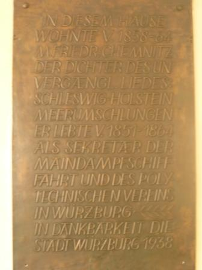

Wer wie wir viel im Internet herumstreunt, um sich zu versichern, dass anderen Menschen genauso langweilig ist wie einem selbst, hat die folgenden Seiten bestimmt bereits besucht. Dem Rest wünschen wir viel Freude bei der Zeitverschwendung:
:: Anarchostalinisten ::
Diese Seite der hiesigen Zelle der anarchostalinistischen Weltliga, die auf dem „Boden des kommunistischen, anarchistischen, leninistischen, bakuninistischen, freudschen, honeckerschen Erbes“ steht, möchte nicht nur „Antideutsche und Antispes“ ins Gulag stecken, sondern auch die „Fans der Vereine Hamburger SV und VfB Stuttgart“. Überleitend zum nächsten Link wundert es, dass die Hipster verschont bleiben.
:: Hipster Antifa Neukölln ::
Ernst gemeint ist hingegen das Anliegen der Hipster Antifa Neukölln, die sich gegen die Diskriminierung von Hipstern und Touris in Berlin wendet. Die Erfolgsgeschichte des moderne Antisuevismus wird anscheinend ununterbrochen fortgeschrieben. Welche Bevölkerungsgruppe nimmt für das Würzburger Schoppenbürgertum eigentlich die Rolle der Schwaben ein? Mit ähnlichen Ressentiments behaftet ist hier der Münchner, wobei man dann vom modernen Antimonac(um)ismus sprechen müsste. Das können wir uns aber nicht eingestehen, weil wir in der Vergangenheit nicht nur einmal die Parole Love music, hate Munich! propagierten.
:: was Altes ::
Wer etwas Älteres im Internetskurrilitätenkabinett lesen möchte, die/der kann sich gerne über diesen Versuch amüsieren, alle antideutschen Gruppen aufzuzählen und den Niedergang der Antideutschen empirisch zu beweisen. Besonders interessant ist dabei, dass Gruppen wie TOP B3erlin aufgezählt werden. Warum wurde damals der Letzte Hype nicht mitgezählt?
Fast ein wenig enttäuscht sind wir, dass die Homepage des Freundeskreis der Juche-Ideologie in der Kommunistischen Partei Deutschlands mittlerweile vom Netz gegangen ist.
Und immer noch warten wir auf eine Solidaritätsgruppe für Transnistrien, dem letzten verbliebenen realsozialistischen Staat auf europäischem Boden. Haha.
Was für eine Zeitverschwendung, diesen Blogeintrag zu lesen.
vor ein paar Wochen beobachtete man ein paar von Euch bei einer Art Sightseeingtour zum Iranischen Streikzelt nach Würzburg. Schnell ein Foto schießen mit Eurem neuesten Hochglanztranspi vor dem Flüchtlingscamp, dann wieder abdüsen, das ist gelebte Solidarität. Ich will Euch das nicht krumm nehmen: Wer rastet, der rostet, das gilt auch für den jungen Revolutionär. Wie sagte schon Napoleon? Vier Sekunden rastet der Revolutionär, fünf der Bürger und mehr als sechs nur ein Idiot. und bestimmt musstet Ihr am selben Tag noch einige weitere Fotos schießen, von Occupycamps zum Beispiel, um echte Solidarität zu leben, auf Flickr und Facebook.
Mit dem Fotolächeln war es aber schnell zuende, als Ihr auf einem Zigarettenautomaten einen Sticker entdecktet, auf dem Fight Hamas- support Israel! stand. Reflexartig und äußerst erbost überklebte ein Jungantifaschist den Aufkleber sofort mit einem Sticker, auf dem Hier wurde Naziprogaganda überklebt! stand.
Ich bin nicht davon überrascht, dass es in der Nürnberger Linken Personen gibt, die Israel für einen faschistischen Staat und die Hamas für eine emanzipatorische Bewegung halten. Dies weiß ich schon seit zehn Jahren. Überrascht hat mich jedoch, dass die Szene zehn Jahre später noch immer Jungantifaschisten ausbrütet, denen die Zornesröte im Gesicht steht, wenn sie mit Israel konfrontiert werden.
Aber halt, liebe Nürnberger Antifaschisten, Ist das Würzburger Streikcamp nicht der falsche Ort, wenn Eure Achse des Widerstands Nürnberg-Gaza-Teheran heißt? Vielleicht habt Ihr bei Eurer kurzen Reise nach Würzburg gar nicht gemerkt, dass es sich bei den Iranern am Streikcamp nicht um Unterstützer des „Antiimperialisten“ Ahmadinedschad handelt, sondern um Regimegegner? Meine Empfehlung: Nächstes Mal einfach im Zug sitzenbleiben, nach Frankfurt weiterfahren und dort einen echten Teil der Achse des Widerstands besuchen. Das Iranische Generalkonsulat ist bestimmt ein paar Solifotos wert.
Hoch die internationale Schnapsproduktion! Und immer Akku raus.
Euer Hunter
Nur eine kurze Info, da die üblichen Verdächtigen bisher noch nicht berichteten: Am Donnerstag kommt wohl die NPD mit ihrem Wahlkampftruck nach Würzburg: Hier nachzulesen.
„In diesem Hause wohnte von 1858-1864 Matthäus Friedrich Chemnitz, der Dichter des unvergänglichen Liedes: Schleswig-Holstein meerumschlungen. Er lebte von 1851-1864 als Sekretär der Maindampfschiffahrt und des polytechnischen Vereins in Würzburg. In Dankbarkeit die Stadt Würzburg 1938.“
So steht’s geschrieben in der Maulhardgasse, hinter dem Kaufhof.

Wie man kürzlich nachlesen konnte, möchte Würzburgs Kulturreferent Muchtar Al Ghusain Würzburgs in Stein gehauene Opferkultstätten „in ihren Kontext stellen“, „den Diskurs suchen“. Ich zöge die diskursverweigernde Schlagkraft einer Abrissbirne vor.
Wie schwierig es jedoch wäre, überhaupt etwas von Würzburgs Artefakten zu verschonen, wenn man die Verehrung des nationalistischen Opfers aus der Welt schaffen wollte, verdeutlicht die Tafel zu Ehren des Herren Matthäus Friedrich Chemnitz: Schleswig-Holstein meerumschlungen ist genauso wie das Lied der Deutschen ein Kind der vormärz’schen Kriegsgeilheit mit ihrer antidänischen und vor allem antifranzösischen Stoßrichtung. Halten wir uns weiter an Herrn Al Ghusains Intention: In welchem Kontext würdigte die Stadt Würzburg 1938 Herrn Chemnitz? Würzburgs damaliger Oberbürgermeister Theo Memmel, der noch am 02. April 1945 verlauten ließ, dass man jeden erhänge, der für den Feind arbeite, hat die Tafel sicher nicht wegen Chemnitzs Verdiensten um die Mainschifffahrt anbringen lassen. Es handelt sich schlicht und einfach um ein noch heute gehegtes und gepflegtes Nazidenkmal.
Der Studentenstein, die Kriegerdenkmäler, all die Kultstätten der nationalen Huldigung, was bewirkt es, sie in ihren historischen Kontext zu stellen? Das Vergangene und das Gegenwärtige werden auf künstliche Weise entknotet. Vergangenes ist vergangen, obwohl es auch auf die Gegenwart ihre Schatten wirft, sein Geist weiter existiert.
Und die Geschichte des nationalen Opfers lebt weiter. Ausgerechnet auf der Homepage der Stadt Würzburg, ausgerechnet bezüglich des Herren Nazi-Oberbürgermeisters Theo Memmel. Unter der Rubrik Stadthistorische Streiflichter erfährt man: „Im Gegensatz zu Gauleiter Dr. Otto Hellmuth, der sich bereits vor der Entscheidung in Richtung Nürnberg abgesetzt hatte, blieb Oberbürgermeister Theo Memmel in Würzburg und kämpfte mit einem von drei Volkssturmstoßtrupps in der Randersackerer Straße aufopfernd aber sinnlos gegen die überlegenen Angreifer.“ Welch schön gezeichnetes Heldenepos! Gauleiter Dr. Otto Hellmuth, der feige Verräter, flüchtete sich nach Nürnberg, Herr Memmel aber, der scheiternde Held, setzte sich aufopferungsvoll für seine Stadt ein. Liest man diesen Text, verwundert es fast, dass man Herrn Memmel nicht posthum den Kulturpreis der Stadt Würzburg verliehen hat.
Die Verehrung des nationalen Opfers lebt weiter, auf der Homepage der Stadt Würzburg, bei jedem Volkstrauertag, bei jeder Kranzniederlegung des Intercorporativen Convents am Studentenstein. Denkmäler in ihren historischen Kontext zu stellen, solange der Mythos des Opfers für die Volksgemeinschaft Realität besitzt, bedeutet, die geistigen Abgründe der Gegenwart totzuschweigen.
In einer Gemeinschaft, deren Mitglieder die Existenz einer halluzinierten Meinungsführerschaft des Politisch Korrekten für ein Faktum halten, treibt die empfundene Distinktion manchmal unfreiwillig komische Blüten der nationalliberalen Einfalt. Und so führt das Denken ohne Widerspruch, das preaching to the converted, das ununterbrochene Sich-Selbst-Auf-Die-Schulter-Klopfen, auch auf den Häusern der Würzburger Studentenverbindungen dazu, dass eher einfach gestrickte Reden als Husarenritt wider die Verhältnisse wahrgenommen werden, die man sogar mit einem eigenen Büchlein würdigt: Die als Buch herausgegebenen „Würzburger Reden“ von Dr. Thomas Cieslik, Burschenschafter, Politikwissenschaftler und FDP-Mitglied, sind dafür ein gutes Beispiel.
Doch von welchem Milieu rede ich hier eigentlich? Denn „nicht alles, was pc im Munde führt, ist gleich rechts, aber bestimmt alles, was rechts ist, führt pc im Munde.“ (Barbara Junge/Julia Naumann/Holger Stark (1997): Rechtsschreiber. Wie ein Netzwerk in Medien und Politik an der Restauration des Nationalen arbeitet. Berlin. S. 21) Sucht man einen Begriff für das politische Milieu, von dem hier die Rede ist und das das Politisch Inkorrekte zur Tugend erhoben hat, stößt man auf keine klare Bezeichnung: Nationalliberal, nationalkonservativ, rechtsliberal und nationalfreiheitlich sind Vorschläge, aber weder lassen sich die einzelnen Begriffe bisher klar voneinander abgrenzen noch wurden bisher Versuche unternommen, die Ansichten und Ziele dieses Milieus stringent zu untersuchen. Als Arbeitsdefinition schlage ich die Bezeichnung „freiheitliche Grauzone“ vor. Durch das Wort freiheitlich wird zum einen eine häufige Selbstbezeichnung der Milieumitglieder aufgenommen, zum anderen ist es sowohl mit dem klassischen liberalen Denken, als auch mit dem nationalchauvinistischen Ansinnen der FPÖ konnotiert. Grauzone trägt der Tatsache Rechnung, dass es sich um kein klar abgrenzbares Milieu handelt: die freiheitliche Grauzone ist sowohl mit etablierten deutschen Parteien verbunden, als auch mit den Thinktanks und Institutionen der Neuen Rechten. Das Meinungsspektrum ist nach Rechts meilenweit offen, nach links aber fest verriegelt.
Zu Wesen und Funktion des Begriffs Political Correctness wurde bereits viel veröffentlicht. Als Einstieg sei Katrin Auers Essay empfohlen. Mit dem PC-Begriff wird der Versuch unternommen, eine linke Diskurshegemonie zu umschreiben, die irgendein Denken unterdrückt, das die Wahrheit ans Licht bringen könnte, in unserem Falle ein so genanntes freiheitliches Denken. Bestimmte Begriffe sind mit der Political Correctness stets verbunden: Die Anhänger der PC werden als Gutmenschen bezeichnet, besonders häufig verbunden ist der Diskurs auch mit antifeministischen Ansichten, der Begriff „Genderterror“ steht dafür beispielhaft. Auch der Zeitgeist wird als abstraktes, nicht greifbares Unterdrückungsmoment angegriffen. Viel zu kurz kommt in den Untersuchungen die Ähnlichkeit zwischen klassischem Verschwörungsdenken und der Agitation gegen PC: Denn beide kommen ohne Gegner aus. Das Politisch Korrekte wird als eine mächtige Kraft dargestellt, die die Fäden zieht, ohne dass es Akteure gibt, die sich selbst als Politisch Korrekt bezeichnen würden. Die Rhetorik gegen PC drückt sich in Begriffen wie Tyrannei, Terror, Fundamentalismus oder gar Faschismus aus, ohne eine zielgerichtete Bewegung benennen zu können, die Politisch Korrekt wäre. So wie der Antisemitismus keine Juden braucht und Truther keine Bilderberger, so braucht auch die Agitation gegen Political Correctness keine Politisch Korrekten, sie funktioniert selbstbezüglich als Kampf der freiheitlichen Mehrheit gegen die böse Minorität. Auch hier knüpft sie an das klassische Verschwörungsdenken an, das doch zutiefst verbunden ist mit der religiösen Idee des Teufels, der durch bestimmte Personen seine Macht über die Menschheit ausübt.
Zum Glück kann man bei Amazon einen Blick in die „Würzburger Reden“ werfen, sonst wäre uns dieses Beispiel burschenschaftlichen „Geistes“ nie in die Hände gefallen: In Print ist dies Büchlein leider nicht mehr verfügbar. Vor einem Blick ins Buch stellt sich die Frage, wo Cieslik PC begegnet ist: Laut Aussage seiner Homepage hat dieser in Eichstätt studiert und war später in Würzburg tätig. Beides wahrlich Gegenden, in denen der linke Meinungsterror in jeder Pore der Journaille steckt. Nicht. Wenn ein Jan Fleischhauer im politisch-journalistischen Milieu Berlins, dann und wann durchaus unterhaltsam, auf die Pauke haut, nimmt man ihm wenigstens noch ab, dass die Mehrheit seiner KollegInnen ein durchaus anderes politisches Grundverständnis besitzt. In Würzburg imaginiert man sich die Herrschaft der Politisch Korrekten herbei, was sich täglich in den Kommentarspalten der Main-Post niederschlägt und sich auch in den „Würzburger Reden“ zeigt.
Selbstverständlich, ganz gemäß der burschenschaftlichen Weltdeutung, sind die Schuldigen, die jetzt Deutschland regieren, schnell ausgemacht: die 68iger. „Eine Ideologie aus spontan-anarchistischen, antibündischen, also gegen Nation und Familie gerichtete(n) Politik“ (Rechtschreibfehler im Original) sei hier am Werke und sei nun „erfolgreich in den Institutionen verankert“. Hier haben wir sie, die bereits früher angedeutete gruselige Verbindung der Freiheitlichen mit dem Nationalen. Faszinierend, mit wie viel subversiver Energie die 68iger für Cieslik noch immer ausgestattet sein müssen, damit er sich seinen Feind zeichnen kann, um die konservativ gewordenen 68iger, die sieben Jahre in Rot und Grün das Land regiert haben, übersehen zu können. Das Bild eines Deutschlands, das eine wie auch immer geartete linke Meinungsführerschaft besitzt, wird noch weiter gezeichnet: „Unabhängige, kritische Freigeister sind rar, sie tauchen nicht in der veröffentlichten Meinung eines durch Zwangsgebühren finanzierten und immer stärker in die Wohnzimmer hineindiktierten, ermahnenden, ja fast erziehenden öffentlich-rechtlichen Rundfunks auf.“ Nun will man Cieslik gar nicht verübeln, von den GEZ-Gebühren genervt zu sein. Aber die Assoziationen von staatlicher Meinungskontrolle und linkem Kontrollstaat, die hier hervorgerufen werden, benötigen eine starke Einbildungskraft. Es spielt im Zusammenhang der freiheitlichen Grauzone überhaupt keine Rolle, ob solche Behauptungen verifizierbar sind: Verschwörungsdenken reproduziert sich selbst, es braucht keine Beweise. „Hinzu kommen auch neosozialistische Rezepte, die das Funktionieren der Marktwirtschaft von Angebot und Nachfrage immer weiter aushebeln.“ Wir übersetzen diese Aussage: die Marktwirtschaft ist deshalb krisenhaft, weil es den „Neosozialismus“ gibt. Da hätte er doch lieber mal Marx gelesen, oder wenigstens Keynes.
Die Pointe aus den Auszügen der „Würzburger Reden“ ist aber definitiv, welche Säulenheilige sich Cieslik ausgesucht hat: „Mit geistiger Frische gegen die vorherrschende Tump- und Verwirrtheit vorzugehen, trauen sich nur wenige: aus Angst vor dem gesellschaftlichen Ausschluss. Die ehemalige Tagesschausprecherin Eva Herrmann ist hierfür ein mahnendes Beispiel.“ What? Wie schlecht muss es um das intellektuelle Niveau der Freiheitlichen stehen, wenn sie Eva Herrmann als ihre Ikone ausrufen? Eva Herrmann, die das Unglück der Loveparade als Gottes Strafe deutet, Eva Herrmann, die sich nach ihrem Rauswurf bei den Tagesthemen jetzt als Sprachrohr des Kopp-Verlages, der sich auf rechte Esoterik, nationalistische Hardliner und Verschwörungstheorien spezialisiert hat, ihre Brötchen verdient. Eva Herrmann, die jetzt auf eher traurigen Veranstaltungen neben Herren im Janker ihre Thesen präsentieren muss:
(sehr zu empfehlen ab 0:25)
Da die freiheitliche Grauzone sich scheinbar derart schwer tut, Identifikationsfiguren zu finden, möchte ich hier auch noch eine vorstellen. Wirklich, mutig, freigeistig und definitiv gegen PC ist diese Dame, die die FDP Nordrhein-Westfalen gleich als Bundestagsabgeordnete aufstellen sollte. Die spricht aus, was man ja wohl noch sagen darf!?
Am Ende waren sich die Korporierten wieder einig und klopften Cieslik auf die Schulter: „Jedes Mal erhielt ich ein positives Echo, Gewünschtes, aber oft nicht allzu in der Öffentlichkeit deutlich Gehörtes, vorgetragen zu haben.“ Um zum Ende noch einmal auf den Text zurückzukommen, „unabhängige, kritische Geister“ sind vielleicht rar, aber rar ist auch manchmal der Geist.
…Was hätte das für‘n Sinn? Die Nazis können doch net naus, denn hier jehörn se hin.“ (Die goldenen Zitonen)
Viel zu späte Anmerkungen zum NSU, der Würzburg-ist-bunt- und der Antifademo im Dezember
Eine Nazibande zieht über ein Jahrzehnt mordend durchs Land und der Inlandsgeheimdienst versagt auf ganzer Linie. Die zivilgesellschaftliche Empörung über die Terrorakte fällt recht schmal aus, denn die Deutschen glauben wirklich, dass ihr Land bunt sei. Die jahrelange nationale Selbstbeweihräucherung qua Fanmeilendeutschland, das popkulturelle Bekenntnis zur „Heimat“ von Lena bis Nena, zeigen ganze Wirkung.
Sie haben nie aufgehört, selbst den Rechtsradikalismus noch als Argument gegen „Multikulti“ zu interpretieren: Die deutschen PatriotInnen, die politisch Inkorrekten, die KämpferInnen gegen die so genannten „Gutbürger“, die sich auf den Mainpostkommentarspalten auskotzen, die BürgerInnen, die selbst noch brennende Asylbewerberheime als Grund für eine Verschärfung der Asylgesetzbegung anführten. Das Problem heißt Deutschland.
Wenigstens gab es in Würzburg, im Vergleich zu vielen anderen ach so bunten Städten, eine solche Demo, kann man sagen. Der antineonazistische Reflex des linken Bürgertums ist nicht der schlechteste. Die zivilgesellschaftliche Empörung muss jedoch, bei allem ernstgemeinten Engagement gegen den Rechtsterror, ein Deutschland zeichnen, das es so nicht gibt. Sie muss eine Stadt konstruieren, die auf breiter Front gegen den rechten Terror sich ausspricht, ohne die Gesellschaft anzugreifen, in der der Nationalsozialismus zuhause ist. Nahezu jeder Kommentar in den Kommentarspalten der Mainpost beweist das Gegenteil. „Blaubi“ schreibt: „ ‚So wie man in den Wald hineinruft, so schallt es heraus‘: die Stimmung der Bevölkerung gegenüber den Migranten wiederspiegelt lediglich den Integrationswillen der ‚Einreisenden‘“. „45acp“ schreibt: „Ich vermisse den Respekt der meisten Ausländer unserem Land gegenüber und höre immer nur Forderungen und Nörgeleien“. „Taucher“ schreibt: „Der bundesweit von bestimmten Kreisen angeheizte Gruppenzwang zum kollektiven Schuldkomplex ist abartig und hochneurotisch.“
Hier schreiben keine organisierten Neonazis, hier schreibt Würzburg. Hier schreibt die Gesellschaft, deren flammendes Bekenntnis zur Nation dazu neigt, das „Fremde“ in Brand zu stecken. Man wird sich ja noch wehren dürfen.
Schneller auf den rechten Terror reagierten in Würzburg antifaschistische Zusammenhänge, die unter dem Motto „Naziterror stoppen! Gegen Rassismus auf allen Ebenen!“ im Dezember durch die Straßen zog. „Derzeit feiert die bürgerliche Heuchelei und Doppelzüngigkeit einen neuen Höhepunkt. Während man sich einerseits über die kühl geplanten und brutal durchgeführten Morde des sogenannten ‚Nationalsozialistischen ‚Untergrunds‘ (NSU) echauffiert, treibt gleichzeitig der bürgerliche Rassismus a la Sarrazin in Medien und Politik neue Blüten.“ Zu einer Demo, die den Widerspruch zwischen der Zeichnung eines antineonazistischen Deutschlands und einer Gesellschaft, die den Rassismus selbst hervorbringt, thematisiert, kann ich mich kritisch-solidarisch verhalten.
Es steht aber die Frage im Raum, weshalb man die Demo überhaupt verantstaltet: Der linksradikale Point-of-view kann nicht an die Frau bzw. an den Mann gebracht werden, das deutsche „Volk“ wird nicht von den so genannten Herrschenden, wer auch immer das sein soll, zu einem Volk von RassistInnen gemacht, das deutsche „Volk“ ist ein sich seiner vernunftpotentiale selbstentmündigender Haufen, der dann und wann zum völkischen Mob wird. Dieser Standpunkt ist nicht vermittelbar, nicht durch eine Demo, nicht durch eine immitierte Stärke der antifaschistischen Bewegung.
Viele Konfliktlinien, die die radikale Linke hervorbrachte, geraten in Vergessenheit: Da die AnhängerInnen der Szene aus jugendkulturellen Milieus stammen und spätestens ab Mitte zwanzig damit beschäftigt sind, ihre „Jugendsünden“ zu verdrängen, können sich die wenigsten daran erinnern, was die antideutsche Antifa begriffen hatte. Bevor antideutsch ein identitäres Label für peinliche Wald- und Wiesenpolitikanten aus den Landkreisen wurde, die viel gelesen, aber nichts begriffen haben, verstand der klügere Teil der Antifaschistischen Aktion aus den neunziger Jahren wenigstens, dass die reflexhafte Feststellung, dass irgendein Scheißkaff bunt sei, nichts anderes als eine Lüge ist, die die Deutschen jedoch allzugerne selbst glauben. Viele Aueinandersetzungen der radikalen Linken sind von gestern und dennoch aktuell wie eh und je, obwohl ihr Personal mittlerweile aus ganz anderen Personen besteht, „alte“, linksradikale SpießerInnen wie mich ausgenommen. Das Dunkeldeutschland von Hoyerswerda und Rostock-Lichtenhagen ist aber noch immer da. „Ist es nicht eher so, dass jede Haltung und Handlung gegen die gesellschaftliche, geographische und politische Konstellation dieses Landes einen Akt der Menschlichkeit darstellt? Dass das Destruktive im Land der Deutschen das einzige Konstruktive ist? Ja, Sisyphusarbeit, vielleicht erfolglos, vielleicht frustrierend, vielleicht lebensgefährlich. Es ist aber die einzige Form, das Leben hier einigermaßen erträglich zu machen. Die einzige Form, für die es sich heute lohnt, hier etwas zu machen. Alles andere erregt den Verdacht, dass man irgendetwas Großes mit diesem Land und seinem Inventar vorhabe. Und das ist tödlich.“
„Dieses wundervolle Licht in Würzburg, wie farbig, ich mag es kaum mit schwarzer Tinte aufschreiben“ schrieb einst Gertraud Rostosky. Das Licht der Vernunft war es nicht.
…und dieser „VS-Bericht“ von Karl Marx erinnert mich an viele meiner FreundInnen, zu finden hier.
„Spitzelbericht der preußischen Polizei
über Karl Marx von 1852/53
Der Chef dieser Partei (der Kommunisten) ist Karl Marx; die Unterchefs sind Friedrich Engels in Manchester; Freiligrath und Wolff (Lupus genannt) in London; Reine in Paris; Weydemeyer und Cluß in Amerika; Bürgers und Daniels waren es in Köln; Weerth war es in Harnburg. Alle außer diesen sind nur einfache Mitglieder. Der schaffende und handelnde Geist, die eigentliche Seele der Partei ist aber Marx; darum will ich Sie auch mit seiner Persönlichkeit bekannt machen.
Marx ist von mittlerer Statur, 34 Jahre alt; trotz seines besten Alters werden seine Haare schon grau; seine Gestalt ist kräftig; seine Gesichtszüge mahnen sehr an Szenere (einen ungarischen Revolutionär), nur ist sein Teint mehr braun, sein Haar und Bart ganz schwarz; letzteren rasiert er gar nicht; sein großes, durchdringend feuriges Auge hat etwas dämonisch Unheimliches; man sieht ihm übrigens auf den ersten Blick den Mann von Genie und Energie an; seine Geistesüberlegenheit übt eine unwiderstehliche Gewalt auf seine Umgebung aus, Im Privatleben ist er ein höchst unordentlicher, zynischer Mensch, ein schlechter Wirt; er führt ein wahres Zigeunerleben, Waschen, Kämmen und Wäschewechsel gehört bei ihm zu den Seltenheiten; er berauscht sich gern. Oft faulenzt er tagelang, hat er aber viel Arbeit, dann arbeitet er Tag und Nacht mit unermüdlicher Ausdauer fort; eine bestimmte Zeit zum Schlafen und Wachen gibt es bei ihm nicht; sehr oft bleibt er ganze Nächte auf, dann legt er sich wieder mittags ganz angekleidet aufs Kanapee und schläft bis abends, unbekümmert um die ganze Welt, die bei ihm frei aus- und eingeht.
Seine Gattin ist die Schwester des preußischen Ministers von Westphalen, eine gebildete und angenehme Frau, die aus Liebe zu ihrem Mann sich an dieses Zigeunerleben gewöhnt hat und sich in diesem Elend nun ganz heimisch fühlt. Sie hat zwei Mädchen und einen Knaben, alle drei Kinder sind recht hübsch und haben die intelligenten Augen des Vaters.
Als Gatte und Familienvater ist Marx, trotz seines sonst unruhigen und wilden Charakters, der zarteste und zahmste Mensch. Marx wohnt in einem der schlechtesten, folglich auch billigsten Quartiere von London. Er bewohnt zwei Zimmer, das eine mit der Aussicht auf die Straße ist der Salon, rückwärts ist das Schlafzimmer. In der ganzen Wohnung ist nicht ein reines und gutes Stück Möbel zu finden, alles ist zerbrochen, zerfetzt und zerlumpt, überall klebt fingerdicker Staub, überall die größte Unordnung. In der Mitte des Salons steht ein altväterlicher großer Tisch, mit Wachsleinwand behangen. Auf diesem liegen seine Manuskripte, Bücher, Zeitungen, dann die Spielsachen der Kinder, das Fetzenwerk des Nähzeugs seiner Frau, dann einige Teetassen mit abgebrochenen Rändern, schmutzige Löffel, Messer, Gabeln, Leuchter, Tintenfaß, Trinkgläser, holländische Tonpfeifen, Tabakasche, mit einem Wort alles drunter- und drüber gehäuft, und alles dies auf einem einzigen Tisch.
Wenn man bei Marx eintritt, werden die Augen von dem Steinkohlen- und Tabaksqualm derart umflort, daß man im ersten Augenblick wie in einer Höhle herumtappt, bis sich der Blick mit den Dünsten allmählich befreundet und man wie im Nebel einige Gegenstände ausnimmt. Alles ist schmutzig, alles voll Staub, mit dem Niedersitzen ist es eine wahrhaft gefährliche Sache. Da steht ein Stuhl nur auf drei Füßen, dort spielen die Kinder und machen ihre Küche auf einem anderen Stuhl, der zufällig noch ganz ist. Richtig, den trägt man dem Besucher an, aber die Kinderküche wird nicht weggeputzt, setzen Sie sich, so riskieren Sie ein Paar Beinkleider. Alles dies bringt aber Marx und seine Gattin durchaus in keine Verlegenheit. Man empfängt auf das freundlichste, man trägt Pfeife, Tabak und was eben da ist mit Herzlichkeit an. Eine geistreiche angenehme Konversation ersetzt endlich die häuslichen Mängel, macht das Ungemach erst erträglich. Man söhnt sich mit der Gesellschaft sogar aus, findet diesen Zirkel interessant, ja originell. Das ist das getreue Bild von dem Familienleben des Kommunistenchefs Marx.
Aus: H.M. Enzensberger, Gespräche mit Marx und Engels. Insel Tb 19.“
Der Verfassungsschutz müsste hunderte neue MitarbeiterInnen einstellen, würde er alle Land- und BundestagspolitikerInnen überwachen, die Israel nicht trotz, sondern wegen Auschwitz kritisieren und Israelkritik als leidenschaftlich betriebene deutsche Volkssportart betreiben. Und man merkt spätestens, dass es keine objektive staatliche Extremismusbekämpfung gibt, wenn man vergeblich nach dem Namen Martin Hohmann in den Archiven des VS sucht.
Die Priorität des Verfassungsschutzes ist eine andere, was die Offenlegung der vom VS überwachten Abgeordneten der LINKEN ein weiteres Mal beweist. Es geht eben nicht nur um den Schutz des Grundgesetzes, sondern auch um parteipolitische Intentionen unter dem Deckmantel des „politikwissenschaftlichen“ Extremismusbegriffs. Sich offenbar der nötigen massiven Etaterhöhung für den VS bewusst, wenn es um eine grundlegende Übewachung zweifelhafter IsraelkritikerInnen ginge, hält man Gregor Gysi, Petra Pau und Katja Kipping offenbar für gefährlicher als leidenschaftliche AntizionistInnen wie Inge Höger, Annette Groth und Sevim Dağdelen.
Ein besonderes Schockervideo bietet Stefan Ziefles Vortrag vom „Marx is Muss“ Kongress 2010 mit dem Thema „Ist Kritik an Israel antisemitisch“, mit dem sich hier schon intensiv auseinandergesetzt wurde.
Niemand, der dieses Video gesehen hat, kann danach noch behaupten, es gäbe keine problematische linke „Israelkritik“. Trotzdem bin ich der Überzeugung, dass ein Teil der LINKEN dies auch weiterhin behaupten wird.
Manche Dinge sind erst ein paar Jahre vorbei, und dennoch fühlen sie sich so an, als habe der Lauf der Provinzgeschichte alle ihre Spuren beseitigt: Lokalitäten wie das Autonome Kulturzentrum oder das Fiasko gehören für mich zu solchen Dingen.
Und noch vor ein paar Jahren hatte Würzburg ein unfreiwilliges Markenzeichen, an das ich mich gerne erinnere, und die Polizei sich wahrscheinlich auch: Sowohl auf den separiertesten Vorstadtwohnblocks als auch am bürgerlichen Traum vom Eigenheim leuchtete ein Schriftzug, hell wie die Nacht: Die Graffiticrew B-Z-A dominierte mit einem einfachen Schriftzug und einem dazugehörigen Männlein den städtischen und suburbanen Raum auf eine Art und Weise, die man im Nachhinein nur als größenwahnsinnig betrachten kann. Noch heute finden sich auf der Homepage der Stadt Würzburg zum Stichwort B-Z-A die Worte, dass es sich hierbei um „eine nicht unbekannte Würzburger Sprayer-Bande“ handele. Irgendwann wurden sie wohl gebustet.
Graffiti und die öffentliche Debatte über seine Ästhetik sind die besten Beispiele dafür, dass die Warenförmigkeit jede Zelle menschlichen Schaffens durchdrungen hat. Nichts, außer die Existenz des Kapitalismus, gewährt, dass Straßentags als Vandalismus gelten, und Streetart als Kunst. Denn Streetart, die sich selbst als solche bezeichnet, hat den unbewussten Schritt schon getan, selbst als Kunst wahrgenommen werden zu wollen und den öffentlichen Raum in den Kategorien der bürgerlichen Ästhetik zu betrachten. Die bekannte Aussage „Streetart is not a crime!“ bezeichnet diesen selbstentwaffnenden Schritt, den Graffiti und Streetart in der Regel vollziehen. Ein Hundi hier, ein Blümelein dort, fertig ist das Streetart-Stadtbild, das auch die WochenendeinkäuferInnen aus Theilheim als bereichernd empfinden. Selbst, wenn sich Streetart-MalerInnen nicht mit ihrer Leidenschaft ihre Brötchen verdienen und ihre Streetart zu Kohle machen können: Sie kommen in der öffentlichen Diskussion nur derart gut weg, weil sie das gleiche verwelkte Empfinden von menschlicher Kreativität besitzen wie diejenigen, die den Markwert ihrer Stadt erhöhen möchten. Stadtbildkommissionen haben nichts anderes im Sinn. Dabei ist eine Dialektik von Verschönerung und Verschandelung schon immer in Graffiti angelegt: Noch das negativste Element einer Subkultur, der Schriftzug an der Wand als Aufbegehren gegen eine Welt, die so schreiend schön ist, dass sie eigentlich alle zum Kotzen finden, kann durch die Kombination von strafrechtlicher Verfolgung und sozialpädagogischen Graffitiworkshops in das umgewandelt werden, was man einen Beitrag für die Gesellschaft nennt. Und dadurch die Funktion von Kunst erfüllen, zu der sie der Kapitalismus verstümmelt hat.
Der Anfangskeim von Graffiti, vor Sozialpädagogik, Graffitikunstseminaren und Designer-Chique, war das Aufbegehren gegen das, was man Stadtbild nennt und sich gegen den Menschen selbst richtet. Graffiti, betrachtet als die Kunst der Zerstörung, kommt menschlichem Schaffen näher als jedes eingerahmte Piece eines Bansky.
In diesem Sinne, ein Hoch auf die große Kunst- ein hoch auf B-Z-A.
Simon Funk
P.S: Leider Gottes hat ein gewisser „Freund“ aus versehen einen großen Teil meiner Bilddateien gelöscht, daher auch keine Tags von BZA. Falls ich noch welche finde und sie noch nicht entfernt wurden, werde ich diese nachreichen.
Jede Rap-Kapelle braucht einen berufsmäßigen Hater, um sich selbst interessant zu machen. Als mir eines Tages das fliegende Spaghettimonster vor der orthodoxen Kirche in der Zeller Straße begegnet ist, gab es mir den Auftrag, Plastic Borderline zu haten. Und seitdem mache ich eben, was ein Hater tun muss: Ich predige Hass gegen schlechte Rapmusik. Ich zahle sogar fünf Euro Eintritt zu einem Plastic-Borderline-Konzert, nur um böse in Richtung Bühne zu gucken und „BUH!“ zu rufen.
Jetzt habe ich mit Freude festgestellt, dass die Anzahl der Hater zunimmt.
Plastic Borderline, der Disstrack kommt bestimmt!
Und ja, ich schreibe Euren Crewnamen bewusst falsch, weil ich weiß wie es Euch aufregt!
Hey, ihr Heimatschützer vom Würzburger Verschönerungsverein,
seid ihr nicht sonst damit beschäftigt, die Blumen an Denkmälern, an die sich zurecht niemand mehr erinnern kann, zu gießen? Seid ihr nicht sonst immer dafür, historische Bauten zu erhalten, damit Würzburg in euren Heizdeckenhirnen immer das gute alte Postkartenmotiv bleibt?
Wenn das immer noch zutrifft, weshalb protestiert ihr nicht dagegen, dass Würzburgs schönste Ruine den kulturlosen, zeitgeistaffinen Architekten zum Opfer fällt und jetzt ein Hotelturm wird? Habt ihr nicht schon all die Jahre versagt, da ihr zugelassen habt, dass vor mittlerweile sechs Jahren die historische Inschrift aus der Frühgotik von dieser Ruine entfernt wurde?
Was wird uns noch zugemutet? Eine Autobahn durch den Ringpark? Ein Weltraumhafen auf der Marienfestung?
Wehret den Anfängen!
An alle Fans von Sprüchen wie „Wenn das Universum ein helles Zentrum hat, ist Grombühl am weitesten davon entfernt“ und anderen alltagstauglichen Lebensweisheiten vom Krieg der Sterne:
Es fühlt sich so an, als sei die Erdrotation ins Stocken geraden. Als würde sich die Welt, wie wir sie kennen, immer langsamer drehen. Und niemand weiß, welche Macht sie wieder bewegen soll.
Die Erde dreht sich. Noch. Doch die erfahrbare Welt, wie wir sie kennen, scheint müde. Scheint nicht mehr imstande, ist weder gewillt noch fähig, sich selbst zu erneuern. Was wir von Welt kennen, ist noch vorhanden, nur verliert es seine Bedeutung. Politik, Gesellschaft, Vernunft, Emanzipation, Bürgerlichkeit, Aufklärung, all diese Elemente sind noch da. Doch kommen zu ihrem Ende.
Bilde ich mir nur ein, dass die Gesellschaft auf ein Ende zusteuert, und sich der Halm, an den sich der Pöbel klammert, die Barbarei ist? Wann habe ich das letzte mal mein Zimmer verlassen? Zum Tabakkaufen. Halb fünf.
Ist es der selbe Grauschleier, der die Welt in die Depression reißt, der mir vor Augen schwebt? Wenn er das wäre, müsste er nicht anderen auch ins Gesicht geschrieben stehen? Wie will ich das herausfinden, wenn ich die Menschen nicht mehr anblicken kann, mich ihnen nicht mehr widmen kann, weil der dunkle Schleier eine Marmorwand errichtet hat zwischen ihnen und mir.
Ich kann nur hoffen, dass ich depressiv bin. Alles andere wäre eine Katastrophe.
Man kann von Heike Pauline Graufs Aktionskunst denken was man möchte. Man kann sie grässlich finden, kreativ oder einfältig.
Dass die MainPost im schlechtesten journalistischen Jargon, das die Sauerstoffarmut in Redaktionsräumen von SPON bis Volksblatt beweist, Grauf mal wieder als „selbst ernannte Künstlerin“ bezeichnet, beweist auf ein neues, dass für das Gros der Unterfranken nur die gut eingehegte, biedermeierische Sonntagsmantelkultur als Kunstwerk anerkannt wird.
Ob die Journaille davon ablenken möchte, dass in Deutschland sich auch jeder Journalist einfach selbst ernennt, da es keine staatliche Ausbildung zum Journalisten gibt?
Wie gesagt: Man halte von Grauf was man wolle, aber verglichen mit dem, was die fränkische Bourgeoisie als Kunst betrachtet, müsste man bei Graufs Werken von Avantgarde sprechen. Je stärken die Menschen, die ihre bei Naturmotivmalkursen in Winzerdörfern entstandenen Bilder für kreative Zeugnisse menschlichen Schaffens halten, ein Werk ablehnen, desto näher kommt es wohl dem, was Kunst sei.
Da kampiert der Circus Henry, bei dem ihr Euch Eure Bananen verdient, über den Winter in der Marktgemeinde Zellingen, und Ihr seid einfach mal ausgebüxt, um Euch die Gegend anzusehen.
Nach wenigen Tagen in Freiheit bei „Wald Wasser Wein“ (Zellinger Selbstbeschreibung) wart ihr der drei W aber so überdrüssig, dass ihr aus purer Langeweile einfach wieder zum Käfig zurückgekehrt seid.
Um herauszufinden, wie öde die Gegend ist, habt ihr nur ein paar Tage gebraucht. Diese Erkenntnis gewinnen manche Unterfranken ihr ganzes Leben nicht.
Eine Banane auf Euch, ihr weisen Äffchen!
Euer Hunter
Wir nehmen hier einen Gesprächsfaden wieder auf, den wir, inspiriert von Berthold Kremmler, damals im Letzten Hype begonnen haben.
Berthold Kremmler hat sich zum zweiter mal auf dem Zunderblog mit der Problematik des Gedenkens am Volkstrauertag, unter besonderer Berücksichtigung von Fried Heulers Beitrag, beschäftigt.
Eines vorweg: Ich genoss keine Punkerjugend. Während kommende LehrerInnen und andere zukünftige Bullen gerne damit prahlten, dass ihre Punksozialisation sehr wichtig für sie sei, fühlte ich mich fast minderwertig, ohne viel Pathos erklären zu müssen, dass ich Ende der 90iger Jahre mit HipHop groß geworden bin. Hin und wieder trifft man sie noch, die Realkeeper von damals, die Freestyletypen mit Rucksack von früher, die meistens längst keinen HipHop mehr hören, geschweige denn machen. Viele von ihnen haben den DJ Koze gemacht und sind nun in elektronischen Gefilden zuhause, manche sind durch ihre Enttäuschung über den guten alten HipHop erst zum Punk geworden. Aber alle von früher sind sich einig: „Was ist aus HipHop nur geworden?“
Dabei klingen sie leider Gottes auch nicht anders als mein Opa, wenn er über die Jugend von heute schimpft. Eine Erzählung, die unter Althoppern sehr verbreitet ist, möchte ich durch folgenden Artikel unter die Lupe nehmen: Dass die sexistischen, frauenverachtenden Ghettorapper aus Berlin den guten, unschuldigen, fast schon spirituellen HipHop gestohlen haben und seitdem im Namen des Raps brandschatzend durch die Lande ziehen, um eine ganze Musikkultur in den Dreck zu ziehen. Damit verbunden ist die seit Anfang der 90iger Jahre verbreitete Begriffsdichotomie von Consciousrap und Gangsterrap: Consciousness, das ist Bewusstsein, Sozialkritik, die gute Seite, Gangsterrap, das steht in dieser Dichotomie für die Verrohung, für alles was schlecht ist am Status Quo.
Auch wenn ich selbst vor zehn Jahren noch meinte, es realkeepen zu müssen, und für mich Das NLP-Album von MOR beinahe der Untergang des Abendlandes war, muss ich heute sagen: Der Kampf zwischen „Rucksackrappern“ und „Ghettorap“ hatte in Deutschland nie etwas mit einem wirklichen Konflikt der Attitudes zutun: Hinter der unterschiedlichen Sprache, die sich im Sprechgesang niederschlug, steckte vielmehr ein Verständigungsproblem zwischen akademischer Mittelschicht und unterem Proletariat. Am Beispiel des Frauenbilds möchte ich zeigen, was ich damit meine.
Sprache ist nichts, das gesellschaftlich isoliert existiert, sondern stets der Ausdruck von Sozialisation und Klassenzugehörigkeit. Es ist kein Phänomen der Postmoderne, dass gesellschaftliche Gruppen sprach- und verständigungslos nebeneinander her existieren, ohne miteinander kommunizieren zu müssen und können. In einer BRD, die sich lange Zeit alle Mühe gegeben hat, Deutschsein durch die Blutszugehörigkeit zu definieren, spielt auch der Zusammenhang von Soziolekt und Ethnie eine große Rolle.
HipHop aus deutschen Landes blieb da nicht außen vor: Die Welle der zweiten HipHop-Generation, die sich spätestens mit Bambule 1998 auch vermarkten ließ, benutzte doch bei allem lässig Vulgarisierten die Sprache ihrer Erziehungsberechtigten: das Deutsch der Mittel- und Oberschicht.
Ein kurzer Einschub: Immer, wenn die mediale Öffentlichkeit sich moralisch über HipHop brüskiert, wird übersehen, dass z.B. ein Bushido nicht homophob rappt, weil er sich dies als Mittel der Provokation ausgesucht hat (wobei ich nicht behaupten möchte, dass es keine Kunstprodukte im HipHop gibt), sondern weil die Gegend, in der er groß geworden ist, homophobes Gedankengut hervorbringt. Dies heißt nicht, dass Homophobie im HipHop nicht kritisierbar wäre oder man Bushido nicht persönlich dafür anfucken dürfte, aber das Wichtigste wird bei solchen Moralisierungen stets vergessen: Aufgrund der Möglichkeit, einen Raptrack mit wenig produktionstechnischen und musikalischen Fähigkeiten aufnehmen zu können, ist Rap mehr als andere Musikrichtungen ein Spiegelbild der gesellschaftlichen Tendenzen, auch der Tendenzen des Subproletariats.
Einschub zu Ende: Nicht rein zufällig fühlten sich die Rapper aus der Mittel- und Oberschicht beim so genannten Consciousrap und Spaßrap der späten Neunziger wohler als beim Ghettorap. Konnte sich durch dieses so genannte höhere, auch „intellektuelle“, Bewusstsein eine Sprache ausdrücken, die dem Milieu der Wohlstandsdeutschen entsprach. Als sich dann ab 2001 auch rauerer Rap aus Berlin verkaufte, der die Sprache der Plattensiedlungen und Planstädte sprach, war es klar, dass sich zwei Milieus von Rappern anfeinden mussten. Sie verstanden sich schlichtweg nicht. Und damit ist nicht der persönliche Beef gemeint, sondern sie sprachen und sprechen tatsächlich andere Sprachen. Die Kodes der zweiter HipHopgeneration waren für die subproletarischen Rapper aus Berlin als fremde Studentensprache erkenntlich, genauso wie die Rapper der Hamburger/Münchner/Stuttgarter Schule gleich erkannten, dass die Kodes der so genannten Ghettorapper die Sprache eines „Pöbels“ waren, mit dem ihre Klasse nie etwas zutun haben wollte.
In Wirklichkeit änderte sich mit dem deutschen Straßenrap kaum etwas an bestimmten Bildern, die sich in der Sprache des Rap seit nun drei Jahrzehnten reproduzieren. Es handelte sich hier um ein Sprachproblem, eine Missverständnis zwischen Klassenangehörigen. Dass sich problematische Bilder nicht verändert haben, ließe sich an vielen Begriffen veranschaulichen: Bilder von Männlichkeit, Homophobie und One-World-Antizionismus wären ebenfalls Beispiele, die sich sowohl bei so genanntem Gangsterrap als auch bei Consciousrap vorfinden lassen, nur eben jeweils in einem anderen Soziolekt.
Unser Beispiel soll hier jedoch das Frauenbild sein, das in den meisten Rapproduktionen, egal ob aus Amerika oder aus deutschen Landen, egal ob Conscious- oder Gangsterrap, vorherrschend ist: Frauen sind entweder Huren oder Königinnen, Heilige oder Prosituierte, Queens oder Bitches. Es gibt kein dazwischen. Die Heiligen sind wahlweise Mütter oder langjährige Freundinnen bzw. Frauen, denen meist weder eine sexuelle Selbstbestimmung, oft auch überhaupt keine Sexualität, zugestanden wird. Kurz: Heilige haben keinen Sex. Auf der anderen Seite stehen die Huren, die entweder die Männer nach Strich und Faden verarschen, obwohl sie doch in Wirklichkeit alle nur das Eine wollen: Frauen als betrügerische Objekte. Anhand von ein paar Rappern, die eher dem Movement Ende der 90ziger zugerechnet werden, will ich zeigen, wie wenig sich die Frauenbilder im Rap doch unterscheiden.
Es ist mir bis heute schleierhaft, wie Curse zu seinem Ruf als besonders weiser Rapper gekommen ist: Rappt er doch, als käme er gerade vom Stammtisch in Untereisenheim.
„Ich blindes Arschloch, Deine Spielchen fehlen mir gerad’ noch! Der Rat von Friends war von Beginn an: Laß das Mädel hängen! Gemeinsam ausgehen war Horror, denn nach einmal umdrehen, seh ich Dich rumstehen, mit Typen die Dir unters Hemd gehen. Mal eben fremd gehen war easy denn ich merks bestimmt nicht, triffst Dich in Bars mit Typen, küßt sie unverbindlich.“
Das ist der Track „Hassliebe“ von Curse. Das Selbstbild des armen unschuldigen Männleins, das von der Frauenwelt verarscht wird, das mit einer Frauenwelt konfrontiert ist, die stets schlechtes im Sinne hat, sich stets gegen den Mann als eigentliches Zentrum der Welt verschwört, zieht sich durch viele seiner Tracks.
Liebe Freunde des Münchner Sprechgesangs: Mit Blumentopf schaut es nicht anders aus. Da wird seit vielen Jahren in der Sprache der Studenten sowohl die nette Freundin angebetet als auch die Frau kritisiert, die nicht gleich mit Schu ins Bett steigen möchte, weil sie sich für etwas anderes hält als für sein Betthäschen:
(Flirtaholics, Album Eins A: ) „Hey süße Mädels, was iss‘n los ? Habt ihr‘n bisschen Bock auf die Spitzen-Flows ? Dann werft die Arme hoch und bewegt den Po, Ey Sugarbabies, wie geht’s euch so?“
Flirtaholics – MyVideo
(Das Eine, Album Großes Kino:) „Wenn ich nur das eine will, dann wär‘ es cool, ich fände eine,
die auch nur das Eine kann, doch vielleicht hast Du ja Charakter Persönlichkeit, nen IQ überm Durchschnitt, Tut mir auch Leid, dass mir das Wurst ist“
Ich weiß es wird euch schwer treffen liebe Hippie-Hopper von früher, aber nur weil jemand in einer anderen Sprache sagt, dass man das Eine will und die Meinung des weiblichen Gegenübers keine Rolle spielt, heißt das noch nicht, etwas anderes zu sagen als King Orgasmus One bei „Du nichts ich Mann“: Im Grunde genommen heißt es auch hier nur „fick mich und halt dein Maul“.
Die Liste ließe sich noch beliebig lange fortsetzen, ob „Die Eine“ von der Firma oder „Türlich Türlich“ von Das Bo: Frauen bleiben auch bei den Helden von damals, die von den Straßenrappern aus Berlin angefeindet wurden, meist Heilige oder Huren. Nur weil die Sprache der Straße vulgärer und roher ist, heißt das nicht, dass es hier um etwas grundsätzlich anderes geht.
HipHop bleibt was es immer war: ein Spiegelbild der Gesellschaft. Solange Sexismus in allen gesellschaftlichen Schichten real ist, wird er in den Texten des lyrischen Rucksackrappers und des Neukölln-Hustlers vorkommen. Dass sich die Medien erst seit ein paar Jahren moralisierend auf Rap stürzen, hat viel damit zutun, dass die Straße nicht die Sprache der Medien spricht, sondern ein raues Leben auch rau ausspricht. Ein Akademiker kann eben viel blumiger sagen, dass Frauen in Wahrheit Bitches seien. Blumentopf wird nie eine Talkrunde wegen Sexismus besuchen müssen. Sie sprechen die Sprache der Mehrheit, und sind keine Migranten, alles Punkte, die gegen eine Einladung zur nächsten Antisexismussendung bei Anne Will sprechen.
Den HipHop-Nostalgikern von früher sollte endlich klar sein: Studentenrapper und Straßenrapper haben in vielen Dingen nur aneinander vorbei geredet: Ihr Frauenbild ist das selbe.
Ich will nie wieder „Was ist aus HipHop nur geworden?“ hören, wirklich nicht. Sonst nehme ich ein Dissalbum gegen Euch auf.
Euer Simon Funk
P.S: Die Menschen, die nicht nach den Regeln des HipHop gespielt haben, waren in Deutschland sowieso nie vermarktbar oder von der Szene anerkannt. Weil die Szene eben scheiße ist.
Hört Sookee! Und, falls ihr dem Link noch nicht gefolgt seid, lest Texte von Günther Jakob!
P.P.S: Ich füge in meinem Text hier nicht nach jedem Rapper ein -Innen ein, weil das einfach verschleiern würde, dass es zum größten Teil männliche Rapper sind, die diese Frauenbilder zeichnen. Ich will weder leugnen, dass es schon vor Jahrzehnten Frauen im HipHop gab, noch dass es welche gar, die die Rollenbilder aufsprengen wollten. Letztendlich waren es aber vor allem Männer, die sexistische Frauenbilder im Rap gezeichnet haben.
Als im letzten Sommer alle Welt erfahren durfte, was eigenlich jeder wissen konnte, dass es in manchen Burschenschaften Rassisten gibt und dass der äußerste rechte Rand der Burschenschaften in der Burschenschaftlichen Gemeinschaft sich organisiert, da scheint sich auch etwas im Bewusstsein mancher Adelphen verändert zu haben.
Und dies meine ich in doppelter Hinsicht: Zum einen trat die Adephia Würzburg im September aus der Deutschen Burschenschaft aus. Zum anderen scheint ein bestimmter Burschenschafter es auch für sinnvoll gehalten zu haben, interne Dokumente der Adelphen bei Indymedia zu veröffentlichen. Damit steht die Würzburger Burschenschaft nicht alleine da: Ein gespenstisches Datenleck innerhalb der DB führte dazu, dass einige riesige Anzahl interner Dokumente veröffentlicht wurde, und das Datenleck ist noch immer nicht geschlossen worden .
:: DB Verbandstagung ::
Die Wende der Adephen kam schnell: Nicht einmal ein halbes Jahr zuvor trug man die Verbandstagung der DB in Würzburg aus, und zwar zusammen mit der Burschenschaft Arminia-Rhenania zu München, der vorsitzenden Burschenschaft der DB im Geschäftsjahr 2011. Die Adelphen luden die Teilnehmer der Verbandstagung zum Begrüßungsabend und zum Frühschoppen auf ihr Haus, die eigentliche Tagung fand in der Residenz statt.Es ist typisch für die Würzburger Verhältnisse, dass die eigentliche Verbandstagung einer kritikwürdigen burschenschaftlichen Dachverbands in der Residenz stattfinden konnte, ohne dass sich eine Stimme im medialen Diskurs dagegen erhebt. In anderen Städten mit einer immerhin kritischeren liberalen Öffentlichkeit wurde die Verbandstagung der DB in ihrer Stadt wenigstens thematisiert, in Würzburg bleibt dies dem schattigen Halbdunkel der Blogs und linken Politikzirkel überlassen. Der Eisenacher Burschentag Mitte Juni und das bundesweite mediale Echo stellte für viele Burschenschafter, auch für die Adelphen, eine Zäsur dar: Seitdem wirkt die DB wie ein aufgeschreckter Haufen Hühner, manche Hacken aufeinander ein, manche verlassen den Stall. In der Main-Post war davon freilich nichts zu lesen: Hatte sich doch Manfred Schweidler nur wenige Tage vor dem Burschentag solche Mühe gegeben, Kritik an Burschenschaftern als Ressentiment der Vergangenheit abzutun.
:: Der Austritt ::
Bevor wir zum eigentlichen Dokument kommen stellt sich natürlich die Frage, was jemanden dazu treibt, interne Dokumente der Burschenschaft auf Indymedia zu veröffentlichen. So detailreich, wie die Daten sind, ist es sehr unwahrscheinlich, dass es sich um einen Datendiebstahl eines Externen handelt. Alle anderen Spekulationen über die genauen Gründe sollen hier nicht weiter verhandelt werden. Wir gehen im Folgenden davon aus, dass es beim Dokument um den echten Antrag handelt, der im September auf dem Bundeskonvent der Adelphen angenommen wurde.
Welch Gründe werden im Dokument aufgeführt? Wen die eigene adelphische Geschichtsphilosophie interessiert, weshalb man laut Aussage des Antragsstellers aufgrund von Vorgängen im 19. Jahrhundert nicht unbedingt in der DB sein muss, darf gerne selbst nachlesen. Unser Interesse gilt dem aktuellen Geschehen.
Zum einen ist ein wesentlicher Grund für den Austritt die Verbandspolitik der Burschenschaftlichen Gemeinschaft, deren Bestreben es offensichtlich sei, „den Dachverband der Deutschen Burschenschaft zu majorisieren oder gar zu sprengen“. Man unterstellt der BG „rassistische Motive“. Es ist tatsächlich erfreulich, dass ein Burschenschafter erkennt, dass es in der BG Rassismus gibt und dass man sich gegen diesen stellt.
Ein anderer Grund ist das mittlerweile vollkommen ramponierte Image der DB. „Die enorme Resonanz in der Presse hat gezeigt, wie schädlich diese Provokation für das Bild von Verbindungen im Allgemeinen und Burschenschaften im Besonderen in der Öffentlichkeit ist.“ Besonders interessant wird es, wenn sogar die Burschenschafter Angst haben, der staatlichen Repression gegen Rechtsextremismus ausgeliefert zu sein: „Im Hinblick auf mögliche zukünftige Repressalien der Mitglieder, die im Staatsdienst sind“ will man der DB nämlich austreten. In der Würzburger Welt ist ja zum Glück noch alles in Ordnung: da ist Heinz Henneberger von der Kriminalpolizei gerade Fux. Ich denke, die Aktivitas muss sich also keine Gedanken machen, auf welcher Seite zumindest in Würzburg ein bestimmter Teil der Staatsgewalt steht.
Der Antragssteller geht sogar soweit, auch nicht-deutschen Studenten einen Platz bei den Adelphen anzubieten: „Es ist dem Unterzeichner nicht erkenntlich, warum nicht, wenn auch in Ausnahmefällen, ein Nichtdeutscher, der eine entsprechende akademische Ausbildung und humanistisches Gedankengut, sowie eine Befürwortung des christlich abendländischen (wobei christlich für den Unterzeichner gänzlich unerheblich ist) Wertegedanken pflegt, nicht ein Freund im Sinne des „amico semper amicus“ und damit Bundesbruder in der Adelphia sein können soll.“
:: alles anders? ::
Ist nun alles anders bei den Adelphen? So erfreulich es ist, dass man, wenn auch spät, erkannt hat, welche Tendenzen innerhalb der DB sich da ihren Weg bahnen, ist der Antrag doch durchzogen vom typischen Jargon der Burschenschaften: Es geht gegen den Zeitgeist (Sicherlich ist es an jedem Akademiker […] sich gerade nicht dem Zeitgeist und der öffentlichen Meinung zu beugen..“), was auch immer das genau sein soll, und gegen die Gutmenschen, wer auch immer dies genau sein soll („Man ist der ständigen Kritik der von links intellektueller Gleichmacherei und Pseudo-Toleranz geprägten Gutmenschen ausgesetzt“). Kurz: Mit dem Austritt der DB verändert sich nichts an der burschenschaftlichen Weltdeutung, nichts an den soldatischen Tugenden, nichts an der korporierten Erziehungsgemeinschaft qua autoritärer Konditionierung. Kurz: die Adelphia bleibt ein Gralshüter der deutschen Nation. (Wer aus der Linken versucht, allen Burschenschaften Rassismus zu unterstellen, unterminiert die Kritik an den Korporationen. Das Niveau der linken Kritik bleibt leider meist unter jedem Niveau.)
Besonders zweifelhaft bleibt der Antrag, weil man sich schon in der Präambel gegen die „Überfremdung“ der Burschenschaft ausspricht: „Der Unterzeichner möchte weder der Überfremdung der Adelphia Tür und Tor öffnen noch hat er ähnliches vor.“ Überfremdung ist ein klarer Kode der extremen Rechten, dies sollte auch dem Verfasser des Antrags klar sein.
Kurz erwähnt werden muss an dieser Stelle noch, dass die Prager Burschenschaft Teutonia zu Würzburg, welche sich in der Korporationslandschaft Würzburgs gerade zu etablieren versucht, nicht in den Würzburger Waffenring aufgenommen wurde. Das heißt, die BG-Teutonen müssen weiter alleine Fechten und werden nicht in der ganzen Korporationslandschaft begeistert begrüßt. Immerhin ein Anfang. Laut Aussage der Dokumente war dies allerdings ein Anliegen der Corpsstudenten, nicht der Adelphen.
Das wesentliche Anliegen meiner journalistisch-psychogeopraphisch-gonzowissenschaftlichen Arbeit war und ist, den unterfränkischen Raum und seine faszinierenden Artefakte als mystisch, sperrig, als nur mit ethnologischen Untersuchungsmethoden aufschlüsselbare vormoderne Stammesgesellschaft zu begreifen und untersuchen. Wer auf der Lohrer Karfreitagsprozession oder der Wiesentheider Kirb war, wird die Anzahl an fremden Zeichen und Zeichensystemen für kaum überblickbar halten.
Ganz nach dieser Methode wurden Oberösterreich und seine Rituale vor Jahren ethnologisch untersucht und im Film „Das Fest des Huhns“ dargestellt. In der Hoffnung, dass wir eines Tages auch das Unterfränkische in einer großangelegten Untersuchung erforschen können, empfehle ich Ihnen im Folgenden das besagte ethnologische Meisterwerk:
Die Journaille gibt sich solche Mühe, die FDP mit Druckerschwärze zu vergiften, muss man wirklich noch etwas zum Niedergang der Partei schreiben, die es sich auf die Fahne geschrieben hat, den deutschen „ Liberalismus“ zu repräsentieren? Man muss, weil soviele Bäume schon gerodet werden mussten, ohne dass ein gescheiter Satz über die FDP und das deutsche Bürgertum zu Papier gebracht wurde. Und erst wenn der letzte Baum gerodet wurde und der letzte „Liberale“ sein Bundestagsmandat verloren hat werdet ihr merken, dass die ideologische Flexibilität der FDP keinem Wahlkampfpopulismus geschuldet ist.
Aber first things first: Wenn Philipp Rösler vor den Berliner Abgeordnetenwahlen den eurofeindlichen Joker auspackt, der eigentlich eine Sieben beim Mau-Mau-Spiel war (wobei die FDP in Berlin nicht mal Zwei ziehen durfte), dann schwingt er nicht nur mal kurz die Populismuskeule. Denn die nationale Formierung der „Liberalen“ ist ein Element, das sowohl der FDP als auch der bundesrepublikanischen bürgerlichen Elite immanent ist.
Zuerst zur FDP: Keine andere Partei der alten und neuen Bundesrepublik zeigte sich derart ideologisch flexibel, so wankelmütig zwischen dem, was man politisch rechts und links nennt, keine Partei symbolisiert die Hydra des politischen Liberalismus auf eine solch vulgäre Weise wie die FDP. Seien es die Werner Naumanns, Jürgen Möllemanns oder Teile der aktuellen FDP-Mannschaft im Saarland: Die FDP war stets bereit, die Sakralhalle der deutschen Nation zu betreten, wenn es um das eigene Überleben ging. Irgendwo zwischen Ralf Dahrendorf, Friedrich August von Hayek, Gustav Stresemann und Jörg Haider pendelt das Programm der FDP seit über sechzig Jahren hin und her. Jeder, der bei „liberaler“ Eurofeindschaft von Wahlkampftaktik redet, hat sich das deutsch-nationale Ornament der Partei nicht angesehen, in der sich die deutsche Elite zuhause fühlt: Auf dem flachen Land sind Julis und FDP durchsetzt mit Korpsgeist und korporiertem Habitus, mit einem Milieu also, für das die deutsche Nation von einer geschichtsphilosophischen Aura umgeben ist, an deren Seite man selbst in der nationalistischsten Barbarei noch stehen will. Die Tatsache, dass die lautesten deutsch-nationalen Quälgeister in der FDP derzeit nichts zu melden haben, bedeutet nicht, dass sie nicht längst darauf warten, aus der FDP das zu machen, was ihre korporierten Freunde in Österreich aus einer anderen „liberalen“ Partei gemacht haben. Mit regelmäßigen nationalen Stoßseufzern oder Interviews mit der neurechten Journaille erinnert man die Stahlhelmvisagen an der Basis dennoch auch von der FDP-Spitze herab daran, dass man „da oben“ auch den nationalen Flügel der Partei nicht vergessen hat. „Liberale“ Eurofeindschaft ist also durchaus auch als Lebenszeichen an die WählerInnen zu verstehen.
Der politische Liberalismus, gerade in der Form des deutschen „Liberalismus“, ist stets doppelzüngig: Gerade in einer bürgerlichen Sinnkrise, wie wir sie gerade erleben, zeigt sich, dass das „Freiheitliche“ das Nationale enthält wie die Wolke das Gewitter. Denn der rechtliberale Teil des Bürgertums, der in den Rundfunkgebühren schon den Kommunismus tapsten hört, also gegen den Staatszentrismus der Linken sich ausspricht, muss die Gesellschaft mit einer nationalen Überhöhung kitten, damit die Menschen in ihrem sinnlosen Treiben dennoch zu wissen glauben, für wen sie jeden morgen zu ihrer scheiß Arbeit gehen. Gerade in Krisenerscheinungen des Kapitalismus muss dieser Teil des Bürgertums das Eigene überhöhen, um den Zusammenhalt der Gemeinschaft zu wahren: Kurz, wer zur Nation gehört und wer nicht. Es ist interessant, wie sehr dieser Teil des „Liberalismus“ den staatlichen Kollektivismus hasst, den nationalen Kollektivismus jedoch lobpreist. Es mag für eine kommunistische, antideutsche Strömung reizvoll (gewesen) sein, im politischen Liberalismus ein aufklärerisches Element aufspüren zu wollen, das in diesem aufgehoben zu sein scheint. Man darf aber nicht vergessen, dass sich auf der anderen Seite der Wertmedaille ein nationales Element verbirgt, das in kürzester Zeit aus einem „liberal“-bürgerlichen Milieu einen Mob machen kann. Ein Bekenntnis zum Liberalismus darf bei einem Kneipendisput ein Argument gegen staatsaffirmative SpinnerInnen von der linken Seite des Tisches sein, Normativität ersetzt jedoch die Kritik der politischen Ökonomie in keinster Weise.
Im Grunde genommen ist der politische Liberalismus die Widerlegung der Extremismustheorie, die sowohl dem Verfassungsschutz als auch einem Teil der Politikwissenschaft ihre Daseinsberechtigung gibt: Dass auch im politischen Liberalismus ein Element aufgehoben ist, das die so genannte Freiheitlich-Demokratische Grundordnung gefährden kann ist dieser Theorie unerklärlich. Some call it dialectic.
In Zeiten einer schwächelnden FDP besteht die Gefahr , dass sich die deutsche Elite nicht mehr in einer Partei aufgehoben fühlt. Was für eine politische Kraft in Deutschland entsteht, wenn keine Partei mehr versucht, alle Strömungen des Liberalismus in sich aufzusaugen, können wir nur erahnen. Das europäische Ausland gibt jedoch das beste Beispiel dafür, was das Krisenrezept des europäischen Bürgertums ist.
Man muss ja zugeben, dass es nicht nur Würzburg verdient hat, mit pechschwarzem Hohn besudelt zu werden: Wer schon einmal in Freiburg, Rostock oder Hof war weiß mit Sicherheit, was ich meine. Unser alter Showpraktikant beim Letzten Hype, Karl von Medina, bittet uns, das folgende Buch weiterzuempfehlen: Lexikon der Städtebeschimpfungen.
Zu Würzburg wird Heinrich von Kleist zitiert, dessen Schmähschriften gegen Würzburg viel zu unbekannt sind: Kleist lebte im Jahre 1800 in Würzburg, zum Grund seines Aufenthaltes in Würzburg gibt es bisher lediglich Vermutungen.
Zu Würzburg schreibt Kleist: „Nach Vergnügungen fragt man hier vergebens. […] Nirgends findet man hier ein Auge, das auf eine interessante Frage eine interessante Antwort verspräche. Auch hier erinnert das Läuten der Glocken unaufhörlich an die katholische Religion, wie das Geklirr der Ketten den Gefangenen an seine Sklaverei.“
Es ist interessant, wie sich die dystopischen Bilder der Vergangenheit in den Medien der Gegenwart widerspiegeln.
Filme wie „Running Man“ oder die Romanvorlage „Menschenjagd“ zeichnen das Bild einer Zukunft, die das Spektakuläre in seiner trivialsten Form- als Fernsehunterhaltung- voll und ganz als Mittel der Zähmung perfektioniert hat und selbst den Überlebenskampf eines Menschen noch als glitzerndes Showspektakel vermarkten kann.
Im Jahre 2011 ist es nicht die abwegigste Idee, eine Show zu produzieren, in der einige MigrantInnen, die gerade aus Westeuropa in ihre Heimatländer abgeschoben werden sollen, noch einen Koffer Geld gewinnen können, bevor man sie aus dem Land wirft. Das spektakuläre Bild einer Spielshow, und das in ihr zwangläufig enthaltene Gute-Laune-Feeling einer Unterhaltungssendung, verbrennt spielerisch leicht das Bewusstsein für den materiellen und lebensbedrohlichen Ernst der Lage, in dem sich die MigrantInnen befinden.
Jetzt kommt in Holland die Show „Weg van Nederland“ ins Fernsehen: Hier kämpfen sie tatsächlich um Geld, die abschiebebedrohten MigrantInnen, zumindest behauptet dies der Sender. Dadurch, dass nicht nur die KandidatInnen, sondern auch die ZuschauerInnen etwas gewinnen können (nämlich eine Reise in die Karibik), wird die Show letztendlichend zur Farce.
Klar ist, dass es sich bei „Weg van Nederland“ wahrscheinlich um eine nicht ganz ernst gemeinte Provokation des Senders handelt.
Die Frage aber, zu wieviel in der Vergangenheit ausgedachter Dystopie die reale Gegenwart fähig ist, wird das Fernsehen nicht zum letzten Mal aufwerfen.
in freudiger Erwartung öffnete ich vor kurzer Zeit das Paket eines bekannten veganen Onlineversands und entdeckte darin nicht nur Sojabeefjerky, vegane Seitanknackwürste und kiloweise texturiertes Granulat, sondern auch Eure Werbebroschüre, die zur Unterstützung des Antitierbenutzungshofes aufrief.
„Auf dem Antitierbenutzungshof leben derzeit insgesamt 41 nichtmenschliche Tiere…“ war darin zu lesen, und zwar deshalb, da Ihr „gegen jede Form des (Be)nutzens von Tieren“ seid.
Hiermit möchte ich mich gerne als Mitbewohner auf dem Antitierbenutzungshof bewerben. Motivation: Als menschliches Tier werde auch ich täglich benutzt. Mein Chef beutet täglich meine menschlich-tierische Arbeitskraft aus, um einen Mehrwert abzuschöpfen. Meine Freunde nutzen mich aus und leihen sich ständig Kohle von mir, die sie nie wieder zurück zahlen. Sie stellen sogar Deckel in unserer Stammkneipe auf meinen Namen aus! Meine Verwandschaft benutzt meine übertragbare Monatskarte, um kostenfrei mit der Bahn zu fahren. Die ARGE hat mir vor einigen Jahren gesagt, ich solle mich für die Gesellschaft nützlich machen, das gleiche sagten meine Eltern. Beide drängten mich dazu, einen Job anzunehmen, den sie- nicht ich!! – für nützlich hielten.
Kurz gesagt: Ich fühle mich voll und ganz benutzt von der gesellschaftlichen Gesamtsscheiße. Ich kann mir nicht vorstellen, dass das mein ganzes kurzes menschliches Tierleben so weitergehen soll. Zu meiner Person: Ich bin zutraulich, habe einen Hängebauch, die Menschen nennen mich Hunter und meine Katze nennt mich „Brrrr- Miau“. Ich bin gerne in der freien Natur und faulenze gerne. Dennoch bin ich kein fauler Hund faules Menschentier, sondern hätte kein Problem damit, auch mal einen Stall auszumisten.
Ich bitte Euch mir mitzuteilen, wann Euer nächstes WG-Casting stattfindet und hoffe auf gute Chancen und ein Ende meines Benutztwerdens.
lieber Inlandsgeheimdienst bayerischer Provenienz,
liebe Landeszentrale für politische Bildungsarbeit,
ihr habt es endlich geschafft. Mit Eurer neuen Seite namens „Bayern gegen Linksextremismus“ habt Ihr mich endlich in die Arme des Staates getrieben.
Auch ich unterstütze Eure Initiative gegen schlechte Rapgruppen wie „Kurzer Prozess“ aus vollem Herzen, auch wenn es mir recht egal ist, welche Texte die jungen Burschen denn sprechsingen. Ich unterstütze Eure HipHop-Qualitätsoffensive eher aus ästhetischen Gründen: „Kurzer Prozess“ hat einfach keinen Flow und die Beats sind sowas von unter aller Kanone, das kann sich kein Mensch anhören. Ich wundere mich, weshalb die erwähnten Aspekte bisher keine Erwähnung auf Eurer Homepage fanden.
Da mir der Kampf gegen hässliche Musik ebenso wie Euch am Herzen liegt, stehe ich in Zukunft, sozusagen als Inoffizieller Mitarbeiter, gerne zur Verfügung, um gegen grottigen Rap wie etwa „Holger Burner“ oder „Schlagzeiln“ vorzugehen.
Um zu beweisen, dass meine Kenntnis der Materie sich nicht nur auf Rapmusik beschränkt, gebe ich Euch noch einige andere wichtige Hinweise, die zur Stärkung der Demokratie beitragen werden:
1. Ihr merkt auf Eurer Heimseite an, dass das Café Marat in München benannt ist „in Anlehnung an Jean Paul Marat, einen radikalen Unterstützer der französischen Revolution und Befürworter politischer Gewalt“, was für Euch ein treffendes Argument ist, um den Münchner Kulturtreff zu diffamieren.
Eurer Argumentation folgend, habe ich noch einige andere Treffpunkt von Extremisten in Bayern entdeckt: Das Richard-Wagner-Gymnasium in Bayreuth beispielsweise ist benannt nach einem bekannten Antisemiten und Hassmusiker. Die Fangemeinde des besagten Hassmusikers veranstaltet jeden Jahr sogar eigene Festspiele, auf denen die antidemokratische „Message“ der extremistischen Musik verbreitet werden soll. In Würzburg benannte man in der Vergangenheit eine ganze Sporthalle nach dem Nationalsozialisten Carl Diem. Als die Presse diesen problematischen Namen thematisierte, benannte man das Areal kurzerhand- aus Tarnungsgründen- in S-Oliver-Arena um.
2. Die Gruppe „Anarchistische Umtriebe Augsburg“ findet auf Eurer innovativen Homepage u.a. deshalb Erwähnung, weil sie die Bundeswehr als „Nachfolgeorganisation der Wehrmacht diffamiert“. In diese „Diffamierung“, die selbtverständlich jeglicher Realität entbehrt, reiht sich auch die militante Gruppe „Gebirgsjägerbrigade 23“ ein, die das südliche Bayern mit Wehrsportübungen terrorisiert. Die erwähnten Gebirgsjäger treffen sich jedes Jahr in Mittenwald, um der gefallenen „Kameraden“, der- aufgepasst!- Wehrmacht, zu „gedenken“ und tragen damit zur besagten Diffamierung bei. Ich bin im Besitz zahlreicher weiterer Informationen über Menschen, die den völlig aus der Luft gegriffenen Zusammenhang zwischen Wehrmacht und Bundeswehr ohne jedes Schamgefühl propagieren.
Daher würde ich mich freuen, wenn ich mich in Zukunft als Inoffizieller Mitarbeiter für die bayerische Demokratie einsetzen dürfte.
Ihr antiextremistischer Liebesmusikant Hunter S. Heumann
Hat mensch in Würzburg so lange verbracht, dass mensch von der erdrückenden Atmosphäre erfasst wird, scheint es, dass die Stadt von der Außenwelt abgeschnitten ist. Die große Welt weiß schon, dass es irgendwo Würzburg gibt, hält es aber für eine kleinere Großstadt unter vielen und verschwendet ansonsten scheinbar nicht viele Gedanken darüber. Es gibt in der Tat keinen rationalen Grund, das Geschehen in Würzburg von außen zu verfolgen. Aber angesichts der regelrechten Migrationsströme, die in die Stadt und aus ihr heraus führen, ist die Republik voll mit Menschen, die sich schaudernd an ihren Aufenthalt in der Vagina-Stadt erinnern. Diese Geschichten wollen wir dokumentieren, denn „da draußen“ leben noch Augenzeugen unserer Not.
Einmal verschlug es mich im Frühling 2009 nach Berlin. So was passiert eher selten, aber auf dem Programm stand der historische Tiefpunkt des bundesdeutschen Anarchismus und da musste mensch einfach dabei sein. An einem Abend kehrte ich, von meinen Begleitern verlassen und von Menschenmengen angeekelt, zu meinem Pennplatz – zur Regenbogenfabrik, einem kollektiv verwalteten Betrieb wohlgemerkt. Fest entschlossen, mich an dem Abend noch zuzuknallen, um die Schande des „anarchistischen Kongresses“ und meine eigene Fremdscham zu verdrängen, deckte ich mich im nächsten Späti (so eine Institution, die in Würzburg schon bitter Not tut) mit Bier ein und lies mich zum Nachgrübeln im Hof der Regenbogenfabrik nieder.
Die Frau, die an der Rezeption Spätschicht hatte, kam raus, um eine zu rauchen, und setzte sich zu mir. Der standardmäßige Austausch von nicht weniger standardmäßigen Repliken wurde jedoch bald interessanter: es handelte sich nämlich um eine Person, die noch in 70er Jahren (oder in den 80er? An eine lebhafte Punker-Community in Grombühl konnte sie sich jedenfalls noch erinnern.) ohne jede Reue aus Würzburg geflüchtet ist. Viel von unserem Gespräch will ich nicht berichten und ich könnte das eigentlich auch nicht mehr: es ist schon eine Weile her und beim Trinken war ich sehr fleißig. Aber merkwürdigerweise lassen sich Gespräche mit solchen flüchtigen Personen in einer einzigen Frage zusammenfassen – „Und, ist Würzburg immer noch Scheiße?“.
Danach noch ein Gang zum Späti, eine Nacht duchschlafen, eine lustige Putz-Aktion vorm Bethanien, noch 2-3 Stunden Zeit in einer sinnlosen Reflexionsgruppe totschlagen und los geht’s – nach Würzburg zurück.
Überflutet von Eindrücken- Presslufthämmer; Textfragmente; Informationsschnipsel; vorbei rasende Menschenmengen; bunte, graue Werbetafeln- ertappte ich mich einige Male dabei, wie ich in den Tegut floh. Selbst ohne die Absicht, etwas zu kaufen.
Ich war der Meinung, dorthin fliehen zu müssen. Um mich besser zu fühlen.
Hier gibt es keine Baumaschinen, die die Ruhe zerbersten könnten. Stattdessen sanfte Streichmusik, gerade an der Grenze des Hörbaren. Die subproletarische Großfamilie mit ihren lärmenden Bälgern, auf die man im Discounter trifft: Hier wirkt sie wie ein Fremdkörper. Das grüne Bürgertum ist unter sich, nichts erinnert an die Welt außerhalb dieser Sphäre. Oft treffe ich Freunde. Ich habe das Gefühl, dazu zugehören. Zu Tegut, seinen KundInnen, seiner Philosophie, seinem süßen Glücksversprechen.
Ich fühle mich gut. Einatmen, ausatmen.
Mir fallen auf Anhieb mehrere Produkte ein, die in den letzten Jahren aus dem Sortiment verschwunden sind. Es schmerzte, als sei ein Teil von mir gestorben. Seitanlendchen, sauer eingelegte Sojasprossen, der grüne Eistee von Alnatura, dieser Sojajoghurt, Vollkornbagels, die Tofuterrine von der Frischtheke. Ich bin der grüne Konsument. Ich bin die Ware.
„Deine Idee, dein Eis“: Was sollte ich bei einem Produkt wie „Eiszauber“ auch anderes vermuten? Neulich starrte ich apathisch Südfrüchte an, von denen ich noch nie gehört habe. Sharon, Physalis. Wie herrlich süß sie wohl schmecken? Tief stecke ich meine Nase in die Vollkornabteilung. Zermahlenes, geröstetes Getreide. Ich denke an ein malerisches Mühlwerk. Der Nexus von Produktion und Konsumption scheint in diesem Moment so deutlich. Das Korn duftet herrlich. Manchmal, am Monatsende, wenn das Geld knapp wird, macht mich die Käseecke furchtbar traurig. Der spanische Feigenkäse rückt dann in weite Ferne.
Es käme mir nie in den Sinn, hier etwas zu stehlen. Ich hätte das Gefühl, mir selbst einen Finger abzuschneiden.
Zuhause, wenn ich mir den Bauch mit all den tollen Produkten voll gestopft habe, fühle ich mich seltsam unbefriedigt und einsam.
In Zeiten, in denen das Feuilleton längst nicht mehr darüber diskutieren muss, ob Deutschland eine Nation wie jede andere sei, weil diese Frage nahezu alle, bis auf ein paar vaterlandslose Gesellen und „ewiggestrige“ Linke, beantwortet haben, beweist die Onlinekommentar-Spalte der Mainpost jeden Tag auf’s neue, dass die Deutschen, die in den 90iger Jahren nichts gegen brennende Asylbewerberheime einzuwenden hatten, nicht einfach vom Erdboden verschwunden sind. Ganz im Gegenteil: Im schattigen Halbdunkel der Onlinekommentarspalten fühlen sie sich pudelwohl, die sich stets betrogen fühlenden Würzburger Ehrenblockwarte, Berufschauvinisten und Frankenhaiders.
Heutiges Beispiel: Der User Juergen1963 mit seinem überaus gewinnbringenden Kommentar namens „Wie behindert kann man eigentlich sein !!!“. Juergen1963 schreibt heute zur einem Artikel, der sich mit der mutmaßlichen Brandstiftung einer Dönerbude beschäftigt: „Die Idee war ja im Prinzip nicht schlecht, in Doitschland gibt es eh zuviele dieser stinkenden Krankheitsherde – aber warum man sich dann auch noch erwischen lässt – kann nur jemand mit IQ < 0 sein !!!"
Man sagt ja, wir lebten heute in einem ganz anderen Deutschland als im Deutschland der 90iger Jahre. Nur leider kann ich dieses Deutschland nirgendwo erkennen, solange ich meinen Verstand benutze, solange ich mich nicht national besaufe.
seit Jahren beglückst du die Mainpostleser in deiner Kolumne „Giselas heile Welt“ mit kuschelweichflauschigen Geschichten über süße Hundis, das kleine Glück und das wunderbar wollige, wogenlose Würzburggefühl.
Aber jetzt bin ich verwirrt. Vor wenigen Tagen las ich deinen neuesten Beitrag, den du „Sozialistische Taxifahrt“ nanntest. Nachdem du nicht den vollen Fahrpreis im Taxi zahlen musstest, weil zwei andere Menschen auf der gleichen Strecke mit im Taxi saßen, konntest du dich „des Gedankens nicht erwehren, dass im Sozialismus nicht alles schlecht war“.
Obwohl ich deinen Mut bewundere, deine Sympathien für die sozialistische Weltgesellschaft zu offenbaren, hätte ich da noch einige Fragen:
Hast du in den letzten Tagen vielleicht ein verdächtiges klicken in deiner Telefonleitung vernommen?
Hat sich die Criminalia Wirceburgia, Würzburgs fleißige und hin und wieder burschenschaftliche Kripo, schon bei deinem Arbeitgeber gemeldet?
Wieviele Leser haben eigentlich seitdem das Abo gekündigt, weil sie kein rotes „Bläddle“ im Briefkasten haben wollen?
Lass dich nicht unterkriegen, Genossin Gisela! Ihre Repression, unsere Solidarität! Und im Falle eines Falles hilft bestimmt die Rote Hilfe
Viele Menschen verlassen die Stadt mit einer gewissen Häme. Als hätten sie eine brenndende Lunte in ihr WG-Wohnzimmer geworfen und vor dem zuschlagen der Feuerschutztür noch „Macht’s gut ihr Trottel!“ gerufen. Am liebsten verlassen sie die Stadt, indem sie ironische Gänsefüßchen um das Wort „Stadt“ wickelt, wenn sie von Würzburg reden. Diese Leugnung der Verbindung von städtischer Lebensform und Würzburg ist ebenso richtig wie absolut falsch. Denn so korrekt es ist, die Verbindung der Begriffe „Stadt“ und „Würzburg“ mit Vorsicht zu genießen, so falsch ist die Annahme, man lebe hier in einem Dorf. Menschen, die in Häuseransammlungen aufwuchsen, die sich wie Stalldorf oder Gaurettersheim anhören, werden dies nicht leugnen können.
Was ist also die Stadt? Ein Rätsel. Weil niemand vollständig verstehen wird, wie sie funktioniert, wie sie strukturiert ist. Wir könnten die kommunalen Verwaltungsorgane und ihre Sub- wie Objekte untersuchen, und dennoch werden wir nichts darüber erfahren, in welchem Zusammenhang das subproletarische Milieu und das akademische stehen. Wir können uns geographisch der Strukturierung einer Stadt annähern, und dennoch erfahren wir absolut gar nichts über die Frage, wie die Stadtteilumgebung sich auf die psychische Verfasstheit ihrer Bewohner auswirkt. Ich bin deshalb dazu übergegangen, den Grad der Urbanität am Grad der Verrätselung zu beurteilen. Verrätselung meint für mich: Die Oberflächen, die für uns sichtbar sind, ohne andere, darüber oder darunten liegende Oberflächen sehen zu können. In Stalldorf, um wieder zu unserem Ausgangspunkt zurückzukehren, wird es uns ganz sicher auffallen, wenn ein Lebensmittelladen seine Pforten schließt. Falls uns dies nicht auffallen sollte, ist dies eher einer intendierten Ignoranz geschuldet, statt der Zugehörigkeit zu einem Milieu, dass uns lediglich eine milieuabhängige Oberfläche von Stalldorf sehen lässt. Anders verhält es sich mit zunehmendem Verätselungsgrad in urbaneren Kommunen: Aufgrund der Masse an Sinneseindrücken nehmen wir größtenteils die Oberfläche von Stadt wahr, die wir aufgrund unserer Klassenlage auch sehen können: der Student sieht den Designerladen und die akademische Buchhandlung, die Mensa und den Denklerblock. Der alternde Postbeamte sieht vielleicht das Hutmachergeschäft, den Eisenwarenladen in der kleinen Gasse und das Damenkränzchencafé am Markt. Ich betrachte als Arbeitsdefinition die Stadt als eine Ansammlung von Oberflächen, die übereinander angeordnet sind. Unser Blick auf Stadt ist geprägt von einer bestimmten, milieubedingten Sichtweise auf Stadt. Was die Oberflächen bildet, zusammenhält, was sie zueinander strukturiert, stellt sich uns in gewisser Weise als Rätsel dar, ist aber einzig und alleine die tote Arbeit, die uns vergesellschaftet. Die psychogeophraphische Methode ist ein Versuch, einen Blick auf die verschiedenen Oberflächen und ihr Verhältnis zu erhalten.
Und so haben viele Menschen laut lachend die Stadt verlassen, weil sie ihnen zu klein, zu spießig, zu provinziell war, ohne dass sie jemals den Versuch unternommen hätten, den Blick auf eine andere Oberfläche zu richten.
Es ist nicht immer von Bedeutung, wie mensch sich mit solchen Gedanken ansteckt. Nur manchmal ist es nützlich, sich während der teilnehmenden Beobachtung zu vergewissern, wo mensch steht und wie mensch hingekommen ist. Wie ein gewisser Alexej Zvetkow, einer der neu-linken Gurus der post-sowjetischen Epoche, vor langer Zeit schrieb: Suche nicht das Guerilla Radio, es findet dich selbst. Früher oder später wird das schon geschehen, wenn du auf der „richtigen“ Welle bist. Wir wissen, die Welle ist eigentlich gar nicht richtig, sondern grudfalsch in dieser Welt, aber das ist gerade das Spannende an ihr. Und das Guerilla Radio hat vielleicht was mit Guerilla, aber nicht wirklich mit Radio zu tun, lassen wir das lieber undefiniert. Dieses Etwas wird aber im Folgenden weiter so bezeichnet.
Selbst diejenigen von uns, die eine glückliche sowjetische Kindheit führen konnten (bzw. mussten – wer wurde da schon gefragt?), d.h. nicht sehr weit hinter der Polarkreisgrenze in den sogenannten Kinderkombinaten eingesperrt, der zwischenmenschlichen Wärme systematisch entwöhnt und dazu von etwas, was sich als Schicksal ausgibt, verdonnert, für den Rest des so genannten Lebens jeden Frühling mickrige Kartoffeln in der lehmigen Erde zu verbuddeln, um sie im Herbst wieder (und in derselben Menge) auszugraben, wurden vom Guerilla Radio erreicht. Die einzige Gelegenheit für ein Kind, in der trostlosen Tundra ein wenig Farbe zu sehen, war die wunderbare Kinderzeitschrift namens „Wesjolyje Kartinki“. Eben für diesen Zweck auf Empfehlung vom höchsten Rat der Kinderärzte der UdSSR gegründet, erfüllte sie noch eine wichtige ideologische Aufgabe: sie sollte suggerieren, dass es irgendwo noch etwas außer der Tundra existiert bzw. schon sehr bald existieren wird. Genau da gelang es dem Guerilla Radio, von Zensurbehörden unbemerkt, das Ambivalente des Heillandversprechens auszunutzen, sich in die Spaltung einzuklinken und eine furchtbare Sabotageakt an der Kindererziehung durchzuführen. Der Saboteur, der in diese Geschichte leider als namenloser Zeichner eingehen wird, ließ ganz offiziell Abertausenden von kleinen grimmigen Menschleins ein Brettspiel als Sonderbeilage zukommen, wo er zwei Pioniere – Mascha und Sascha – auf einen psychogeographischen Trip durch Moskau schickte.
Zarte kindliche Gemüter entwickelten eine Persönlichkeitsspaltung, indem sie immer und immer wieder Mascha und Sascha durch ihre bunten Abenteuer auf dem Brettspiel begleiteten und sich in ihre Lage versetzten. Das massenhafte Auftreten von Kindern, die mit suspekt leuchtenden Augen durch die Gegend rannten, Selbstgespräche führten, die darauf bestanden, dass sie etwas komplett Anderes auf den Straßen sehen, und sich auf irgendwelche Mascha und Sascha als Zeugen beriefen, ist zwar von Kinderpsychologen dokumentiert, aber nicht erklärt worden. Das so genannte „Mascha-Sascha-Syndrom“ konnte nur durch das harte pädagogische Eingreifen fast vollständig verdrängt und beseitigt werden.
Einige Jahre später machte die Tundra der ganzen Welt vor, keine Tundra mehr zu sein; die Kinder wurden etwas größer, wurden aus den Kinderkombinaten in die grauen Schulen der Monostädten entlassen. Zum Ver- und Ausbuddeln von Kartoffeln kam eine kaum verblümte Abrichtung auf Fabrikarbeit hinzu. Indessen gestattete die Tundra in ihren kurzen liberalen Zuckungen so Einiges an literarischen Publikationen. So z.B. das Jahrzehnte zuvor im Ausland erschienene psychogeographische Alkopamphlet „Die Reise nach Petuschki“ von Wenedikt Jerofejew: http://www.petuschki.net/pmwiki/pmwiki.php?n=Main.Moskau-Petuschki# Weil „Die Reise“ erstmals 1973 in Israel erschien, haben wir allen Grund zu vermuten, dass diesmal die weltweite jüdische Verschwörung die Rolle des Guerilla Radios übernahm. Außerdem fanden Pamphleten von Guy Debord und Fredy Perlman Verbreitung, die wir hier wohl nicht vorzustellen brauchen. Tut jetzt wohl nichts zur Sache. Das Resultat war wichtiger: die durch „Wesjolye Kartinki“ verdorbene Jugend fühlte sich sicherer im Umgang mit alkoholischen Getränken und schlich umso tatenfreudiger zwischen Betonklötzen der Monostädte. Außerdem wurde deutlich, dass die Jugendlichen in anderen Städten ähnlich fühlten, sie beschrieben ihre Erfahrungen mit Betonklötzen woanders in ihren Punk-Zines. Es war so neu, so spannend, so gefährlich, diese Flaschenpost in den Händen zu halten…
Was in den Jahren danach geschah, war zwar dramatisch, aber auch banal genug, um es wegzulassen. Die wichtigsten Beteiligten sind praktisch dieselben geblieben: das erwachsene Kind, die seltsamen Stimmen im Kopf und das Saufen. Die Dekorationen sind nur etwas putziger, das muss mensch schon zugeben, aber – wie dank K.L. Reinholdt allgemein bekannt sein sollte – alle Erfahrung steht unter der Bedingung, eine Tatsache des Bewusstseins zu sein… Ob es Zvetkow, der anscheinend in der besten Manier der „Neuen Linken“ in der Redaktion eines Hochglanzmagazins gelandet ist, heute besser geht? Hoffen wir es für ihn und tun wir, was wir nicht lassen können: eidologisch den Stadtplan von Würzburg sezieren.
Lassen wir einen Stadtplan von Würzburg (am Besten doch einen mit 1:100000 Auflösung) auf uns wirken. Der Main, der auf mehr oder weniger gerade von Süd-Ost nach West-Nord fließt, teilt die Stadt entzwei. Auf beiden Seiten Hügel oder Erhöhungen, auch wenn die Erhöhung auf der Innenstadt-Seite etwas weiter vom Main ansetzt. Noch ein Hügel im Norden, von Weinstöcken bedeckt. Das innere Auge sieht sofort diese zierlichen, sich kräuselnden Pflanzen. Bismarckwäldchen, Straubmühle und Versbach auf der einen, Zellerau und Oberzell auf der anderen Seite bilden gewissermaßen die obere, etwas breitere Grenze des Stadtbildes. Beachten wir auch ein ziemlich dichtes Netz von wichtigen Transportwegen um die Stadt – Autobahnen, Bundesstraßen, Eisenbahnen – Blutgefäßknoten, die unabdingbar für das Leben der Stadt sind.
Es lässt sich nicht mehr hinauszögern, von böser Ahnung erfüllt müssen wir endlich das aussprechen, was von allen, die die Stadt von innen gut genug kennen: das Ganze sieht den äußeren Genitalorganen einer Frau verdammt ähnlich aus. Der Schamhügel von Bismarckwäldchen, der nasse Schlitz des Mains. Ja, meine Damen und Herren, es bedarf vielleicht einer regen Phantasie oder eines gewissen Abstraktionsvermögens, aber dank der eidetischen Reduktion ist es endlich begrifflich fassbar: WÜRZBURG IST EINE VAGINA.
Dass der Stadtplan uns die Vulva nicht als ein gerades und sofort erkennbares Bild präsentiert, soll uns nicht länger irritieren. „Der perfekte Liebhaber. Sextechniken, die sie verrückt machen“ von Lou Paget, im Club Bertelsmann 2001 erschienen, belehrt uns, dass es völlig in Ordnung ist, dass die so genannte Norm in diesem Fall sehr breit gefasst ist.
Die schockierende Erkenntnis und vor allem unsere Vorgehensweise lassen aber eine ganze Reihe von Fragen offen. Zum Beispiel, ob Heuchelhof, Rottenbauer und Randesaker zum Bild gehören? Wo soll mensch in dieser Stadt z.B. die Klitoris vermuten? Welche Rolle spielt die Festung? Für was stehen die Brücken? Aber das bis jetzt unklare Lebensgefühl der BewohnerInnen der Stadt beschreibt die Theorie m.E. treffend, also bleibt es die Aufgabe der kommenden Generationen, die Thesen der Theorie zu verifizieren.
Die Weichen für die kommende phänomenologisch-geographische (und zumindest Phänomenologie hat in Würzburg eine Tradition) Erforschung des Stadtbildes, die wir vielleicht Würzburger Vulvologie nennen sollten, könnten wir jetzt schon stellen. Um es mit einem äußerst interessanten Raumforscher der Vergangenheit, Georg Simmel, der immer noch was für und parat hat, zu sagen: „Was bedeutet dieses unendliche Gefäß um uns herum, in dem wir als verlorne Pünktchen schwimmen und das wir doch samt seinem Inhalt vorstellen, das also ebenso in uns ist, wie wir in ihm sind?“ (G. Simmel: Kant. Sechzehn Vorlesungen gehalten an der Berliner Universität, 1905)
Was heißt es eigentlich, in der Vagina zu leben? Die katholische Beschaulichkeit, die um sich greifende Langeweile, Passivität der BewohnerInnen, ihre Anfälligkeit für jegliches reaktionäres Gedankengut, ihre infantile Staatsgläubigkeit bilden gerade das Gegenteil von erwarteter sexueller Entspannung oder einer besonderen Kreativität. Sie umreißen viel mehr ein tiefes psychologisches Problem: die Abschottung von der Außenwelt im dunklen Schoß der Mutter, das Fehlen, ja, die Unmöglichkeit eines autonomen mündigen Individuums. Wenn das zutrifft, sind massenhaftes Ablegen der Individualität und Todestrieb in langer Sicht die Zukunft Würzburgs?
An dieser Stelle möchte ich daran erinnern, dass die gewonnenen Erkenntnisse nur vorläufig gelten, was der Unpräzisheit der Methode geschuldet ist. Sie stimmen wahrscheinlich nur für die Atmosphäre der Stadt, für die allgemeine geistige Tendenz. Denn die Symptome der Depression und Desorientiertheit mögen individuell feststellbar sein, aber die Kollektivitäten in Würzburg tendieren dazu, autoritär und sehr obrigkeitshörig zu sein. Also, wäre doch ein starkes Über-Ich zu vermuten. Wie verträgt sich aber ein starkes Es mit einem starken Über-Ich unter der Bedingung des Ablegens der Individualität? Diese Frage ebenso wie die oben genannten, genau wie die ehrenhafte Aufgabe die ganze Theorie zu bestätigen oder zu verwerfen, delegiere ich an die kommenden Generationen von ForscherInnen. Das Guerilla Radio wird sich schon welche aussuchen.
Nationalliberales Gruselkabinett Teil 2: Der Spitzenkandidat der Liberalen Hochschulgruppe Würzburgs, Alexander Bagus, schreibt für die Junge Freiheit.
Wer ein Zeugnis dafür sucht, dass es in Deutschland keinen Liberalismus gibt, der seinen Namen verdient hätte, dass der deutsch-nationale Verwesungsgeruch stattdessen stets die liberale Partei und ihre Jungschar umgab und umgibt, wird mit Sicherheit auf der Homepage oder auf dem Twitteraccount der Liberalen Hochschulgruppe Würzburg fündig.
Kennergelernt habe ich Enzo an einem volltrunkenen Abend im AKW: Ein Hühne stand da vor mir, in einem weißen Gewand. Er sah aus wie der Priester einer Weltuntergangssekte. Trug ein breites Band um den Hals, auf dem in großen Lettern „Enzo“ stand. Als Enzo mir sein Buch“Liebesbriefe an Frauen“ präsentierte, wusste ich sofort, dass es die paar Mark wert sein wird.
Jetzt habe ich Enzos Blog entdeckt, auf dem es gesammelte Werke und Fernsehauftritte von Reinhold Enzelberger zu sehen gibt. Folgendes Video ist ein Zusammenschnitt seiner Fernsehauftritte in grottiger VHS-Qualität und wohl nur für echte Fans zu ertragen (besonders sehenswert: Enzos Auftritt in einem Berliner Fernsehstudio ab Minute 9):
In Würzburgs bekannter Graffitiunterführung ist ein Werk zu finden, dass auf eine anschauliche Weise verdeutlicht, wie eng die Tibetsolidarität mit einem zweifelhaften Bild von Tibet und China verknüpft ist: „Seine Heiligkeit“ Tendzin Gyatsho und der tibetische Buddhismus dienen der Tibetsolidarität seit vielen Jahrzehnten als Projektionsfläche für antimodern-spirituelle Wünsche oder eine herbeigesehnte ethnische Homogenität Tibets, die sich als „Lob der Differenz“ tarnt. Anlass für das Graffito in der besagten Unterführung war wohl der antichinesische Aufstand in Tibet im Jahre 2008, den die TibetfreundInnen gerne einseitig als legitime Volksbefreiung gegen eine Fremdherrschaft betrachten.
Nun zu unserem Bild:
Der Autor des Graffitos benutzt- sei’s bewusst oder unbewusst- eine Bildersprache, die in mehreren Punkten strukturell an die Bildsprache der antisemitischen Karikatur anknüpft: Der dargestellte buddhistische Junge wird in einem schädelförmigen Suppentopf gekocht. Um ihn herum: lodernde Flammen und allerlei Todesanspielungen als Darstellung des absoluten Bösen. Es scheint ganz offensichtlich: Hier macht sich eine kannibalische Macht des Kindermordes schuldig. Ohne dies darzustellen, wissen alle, die eine rudimentäre Ahnung vom Konflikt um Tibet haben, wer die Kindermörder sind, wer das abolute Böse verkörpert: China.
Das Kind stellt den genauen Gegensatz zu diesem Bösen dar: Es ist wehrlos, strahl eine unschuldige Naivität aus. Während das absolute Böse Tod und Krieg beschert- schlecht auf dem Foto zu erkennen ist eine Stange Dynamit, die unter dem Kochtopf liegt- verkörpert der buddhistische Junge den Frieden: Ihn umgibt eine Aura des Lichts, ein hell erstrahlender Friedensvogel scheint machtlos gegen einen übermächtigen, finsteren Feind.
Erst auf den zweiten Blick zu erkennen ist der Drache, der im Herz des Feuers nistet. Nicht irgendein Drache, sondern Lóng, das chinesische Fabelwesen. Es wird somit erst auf den zweiten Blick erkennbar, wie deutlich die Personifizierung des absoluten Bösen mit China verbunden ist. Lóng streckt seine Klauen nicht etwa in die Richtung seines Opfers, sondern breitet sie in die Richtung weiterer, nicht auf dem Graffito zu sehenden Opfer, aus, als sei sein blutrünstiger Steifzug noch lange nicht vorbei.
Das hier dargestellte Graffito ist weit davon weg, eine harmlose „tibetsolidarische“ Darstellung zu sein: Es ist ein Hetze, gegen China und den Großteil seiner Bevölkerung.
Die Burschenschaft Adelphia hat am 19. Mai Josef Schuster, den Vizepräsidenten des Zentralrats der Juden und Präsident der israelitischen Kultusgemeinde Bayerns, auf ihr Verbindungshaus geladen, auf dem dieser über jüdisches Leben in Würzburg referierte.
Morgen erscheint in der Mainpost eine Reportage des Journalisten Manfred Schweidler, die die besagte Veranstaltung eigentlich nur als Aufhänger benutzt, um die abgeschmackten Argumente, mit deren Hilfe Burschenschafter Kritik abzublocken wissen, als journalistische Objektivität zu vermarkten.
Bevor wir uns der Struktur des eigentlichen Artikels zuwenden, darf man sich natürlich zu anfang fragen, weshalb es ein Journalist der Mainpost für derart wichtig hält, über eine Veranstaltung zu berichten, die von rund zwanzig Menschen besucht wird, von denen ein Großteil sowieso „Vereinsmitglieder“ sind. Man kann sich schwer vorstellen, dass für Schweidler nicht schon von vorneherein klar war, dass er mit seiner Reportage die Adelphen ins rechte Licht rücken wollte. Genau hier liegt überhaupt die Tücke der reportagenhaften Darstellungsform: Dass man durch diese in blumiger Weise eine persönliche Meinung als journalistische Wahrheit darstellen kann.
Schweidler beginnt seinen Text mit einer rhetorischen Aussage:
„Burschenschaften wie der Adelphia geht der Ruf voraus, ein Relikt der Vergangenheit zu sein: autoritäre Männerbünde, die bunte Mützen tragen, ritualisiert trinken, singen oder fechten und mit dem rechten Rand des politischen Spektrums sympathisieren.“
Der Autor hegt überhaupt nicht das Interesse, diese Aussagen zu widerlegen. Wie auch? Die Adelphen sind ein autoritärer Männerbund, in dem ritualisiert getrunken wird, es wird gefochten und man trägt bunte Mützen. Man pflegt freundschaftliche Kontakte zur Normannia Heidelberg, die die antisemitischen Ausschweifungen Martin Hohmanns als Flugblatt veröffentlichte. Man lädt Hannes Kaschkat auf das Adelphenhaus, der als Rechtaußen der Burschenschafter gilt. Man ist in der Deutschen Burschenschaft, mit der einige andere korporierte Verbände aufgrund der mangelnden Abgrenzung zum Rechtsextremismus nichts mehr zutun haben wollen und in deren Reihen sich z.B. die Burschenschaft Dresdensia-Rugia zu Gießen befindet, welche drei führende NPD-Mitglieder zu ihren Mitgliedern zählt.
Kurz gesagt: Es handelt sich nicht um einen Ruf, der der Burschenschaft ganz zu Unrecht vorauseilt. Statt die Einwände der BurschenschaftsgegnerInnen wenigstens einer oberflächlichen Überprüfung zu unterziehen, darf Kriminaloberrat Heinz Henneberger, der Mitglied bei den Adelphen ist, die Kritik abschmettern:
„Die Wirklichkeit sieht heute anders aus als das Klischee, das uns aufgeklebt wird“.
Damit ist das Thema abgehakt. Der korporierte Polizist hat gesprochen. Amen.
Stattdessen prüft Schweidler einen ganz anderen Vorwurf, der aus der plumpesten Ecke der linken Korporationskritik stammt: Nämlich den, dass Burschenschafter zwangsläufig Antisemiten seien. Dieser Vorwurf ist für viele mit dem anfangs aufgeführten Punkt verbunden, dass Burschenschafter „mit dem rechten Rand des politischen Spektrums sympathisieren.“ Für viele der MainpostleserInnen ist keineswegs klar, dass man mit dem rechten Rand des politischen Spektrums symphatisieren kann, ohne AntisemitIn zu sein. Und vielleicht weiß nicht einmal der Autor, dass es nicht nur in den Reihen der „extremistischen“ Parteien Menschen gibt, die völkisch-rechtem Gedankengut anhängen. Schweidler aber erklärt seiner LeserInnenschaft eigentlich, dass Burschenschafter nicht die kahlgeschorenen Naziskins sind, die als Klischee in den Köpfen vieler Menschen auftauchen, wenn sie an den rechten Rand des politischen Spektrums denken. Der Autor hebt daher, neben dem Inhalt von Schusters Vortrag, die ritualisierte Diszipliniertheit der Burschenschafter hervor.
„Gelegentlich erhebt sich einer der 25 Zuhörer, nimmt formell – wie es bei den Burschenschaften Brauch ist – seine orangene Kappe ab, ehe er höflich eine Frage stellt“.
Die/der LeserIn merkt: Die Typen mit den bunten Hüten, die können sich benehmen.
„Am Ende wird der Repräsentant der jüdischen Gemeinden in Bayern bei der Burschenschaft mit einer Flasche (koscheren) Weines verabschiedet – und respektvollem Beifall. Wer anderes erwartet hatte, sah sich getäuscht.“
Damit endet die Reportage, die Fragen stellt, und diese von den Burschenschaftern beantworten lässt. Die Grenzen zwischen Journalismus und Lobhudelei verschwimmen- und eine Reportage ist vorzüglich dazu geeignet, dies nicht auffallen zu lassen.
Liebes „Unabhängiges Würzburger Hochschulmagazin Max & Julius“,
es ist Euch ja hoch anzurechnen, dass ihr herausgefunden habt, weshalb jemand „Solidarität mit Liebig 14″ an Eure Uniwände sprüht. Ich hätte mir durchaus vorstellen können, dass ihr in die ACAB-Falle tappt und Liebig für einen türkischen Männervornamen haltet.
Aber halt mal, liebes „Unabhängiges Würzburger Hochschulmagazin Max & Julius“. Ihr fragt Euch am Schluss, „was jedoch die […] Slogans knapp 400 km entfernt vom Ort des Geschehens bringen sollen“?
Wenn Euch das schon zu weit ist, so hoffe ich doch, dass die AtomkraftgegnerInnen in Eurer Redaktion noch nicht gemerkt haben, dass Fukushima gut 9000 Kilometer weg ist.
Ein Tipp: Einfach mal einen längeren Spaziergang machen. Dann reicht der geistige Horizont vielleicht auch mal weiter als die 400 Schritte vom Studentenwohnheim zur Mensa.
Vor einiger Zeit wohnte ich, aus nichtigen Gründen, für ein paar Monate in Berlin.
Die Postwurfsendung einer Wohltätigkeitsorganisation bat mich, Pfandflaschen, die man nicht im Supermarkt abgeben wolle, neben die öffentlichen Abfalleimer zu stellen, statt sie hineinzuwerfen. Zugunsten der Menschen, die Flaschenpfand nötig haben, um über die Runden zu kommen. Dies erschien mir sinnvoll, und da ich sowieso ein Mehrwegmuffel bin, hörte ich auf diesen Rat.
An einem stickigen Sommertag kehrte ich nach Würzburg zurück. Alles beim Alten: Dieser alte Bahnhof, dem ein musealer Wert zukommt. Die Bahnhofszecken, nach Geld schnorrend. Und die Herren vom Taxistand, die wahren Könige des Bahnhofsvorplatzes, auf hässlichen pinken Gartenstühlen sitzend.
Ich hatte mir im Zug eine kleine Plastikflasche Cola gekauft, die ich auf dem Weg aus dem Bahnhofsgebäude austrank. Nichts ahnend stellte ich Sie neben einen Mülleimer, der sich unmittelbar vor dem Taxistand befand.
Ein lauter Pfiff riss mich aus meiner Gedankenverlorenheit. Er brachte nicht nur meine Physis, sondern auch meinen Geist zurück nach Würzburg. Ich drehte mich um und sah einen Taxifahrer, der von seinem Stuhl aufgesprungen war. „Dei Flasche schmeißt aber scho noch in die Mülltonne?“ blöckte dieser. Verdutzt und nach einer ganzen Weile antwortete ich: „Ich stelle die Flaschen eigentlich immer daneben, für die Flaschensammler.“ Kein Verständnis auf Seiten des Taxifahrers: „Schmeiß‘ die jetzt da nei! Die Penner, die greifen da nei, des macht dene nix!“
Ich schmiss die Flasche in den Mülleimer, weshalb auch immer.
Willkommen zurück, auf dem Flaschenboden der Tatsachen. Willkommen in Würzburg.
Was für eine schreckliche Vorstellung, in eine Kneipe zu gehen und Gunter Gabriel, den dunklen Herrscher des teutonischen Kitschcountry, zu treffen.
Aber im Red Lion hat man sich anscheinend tierisch gefreut, durfte man aus der Mainpost erfahren.
Wirte, die dem Gruselbarden nicht sofort Hausverbot erteilen, haben sowieso keinen Respekt verdient.
Und überhaupt: Statt in Würzburg faul in der Kneipe rumzulungern, soll er lieber mein Boot streichen und sich eine gescheite Arbeit suchen (Ein hoch auf DJ Koze):
Saarbrücken für Slacker Folge 1 von Hunter S. Heumanns Reiseberichten
Vergessen Sie Leipzig, vergessen Sie Dresden! Vergessen Sie all diese Bruchbuden, inklusive Magdeburg und Görlitz an der Neiße! Vergessen sie also all die ostdeutschen Städte, von denen ihre gescheiterten Akademikerfreunde erzählen, man könne sich dort für billiges Geld selbst verwirklichen!
Sie waren wohl noch nie in Saarbrücken, im west-westdeutschen Zonenrandgebiet. In der zukünftigen Trendstadt der Lebemenschen und Lumpenakademiker. Lassen Sie sich entführen ins Lyonerland.
Hinreise: Noch Gelinde ausgedrückt: Saarbrücken liegt nicht am Arsch der Welt, aber man kann ihn von dort aus ganz gut sehen. Daher ist die Reise auch kein Katzensprung. Vielleicht ist sie das dennoch, wenn man nicht in jeder größeren Stadt am Wegesrand ein Bierchen in der Bahnhofsschänke trinkt. Ich weiß es nicht. Auch auf Ex dauert dies viele Stunden. Reisen Sie daher am besten mit dem Auto oder lassen Sie, wenn Sie mit dem Zug unterwegs sind, die Idee, sich an schwäbisch-badischen Stammtischen entlang der Eisenbahnstrecke über Stuttgart 21 unterhalten zu wollen. Lassen Sie das wirklich!
Wie dem auch sei: Irgendwann sind Sie, nur mit zwei mal umsteigen und alles im Regionalverkehr, hoffentlich in Saarbrücken. Mit dem Auto war ich auch schon mal da, aber über Frankfurt-Bockenheim hat es noch länger gedauert. Es würde den Rahmen des Reiseberichtes sprengen, auch davon zu erzählen.
Sehenwürdigkeiten: Wer meine Reiseserie „Unterfrankens hässlichste Orte“ kennt, die oder der weiß, dass Abfuck und Ästhetik für mich eine Symbiose eingehen, die für andere schwer nachzuvollziehen ist. Daher bleibt München immer verabscheuungswürdig. Aber das ist eine andere Geschichte.
Die Saarbrückener Innenstadt besitzt einige sozial verödete Randbezirke, in denen sich Import-Export-Shops, Sportwettenlokale, Nacht- und Nacktbars aneinanderreihen. Irgendwo dazwischen wohnt der Freund, den ich besucht habe, in einer 16-köpfigen WG mit einem Klo und zwei Österreichern. Die vielen leerstehenden Geschäfte und Nettofilialen entfalten ein ostdeutsches Flair, das fast schon an Leipzig Connewitz erinnert und eigentlich jeden dazu einladen, sich selbst zu verwirklichen. Nicht verpassen dürfen Sie den Blick auf die wunderschöne Stadtautobahn, die direkt durch die Innenstadt an der Saar entlang führt. Tipp: Setzen Sie sich bei schönem Wetter an das gegenüberliegende Ufer der Saar. Vertreiben Sie sich die Zeit beim Zählen aller roten Autos, die innerhalb einer von Ihnen festgelegten Zeit auf der Autobahn vorbeifahren.
Land und Leute: Die Saarbrückener sind ein ehrliches aber widerspenstiges Völkchen. Gaststätten heißen „Kneipe zur Hoffnungslosigkeit“ (Bild siehe oben), aber auch „Zum kotzenden Kommunisten“. Man merkt: In Saarbrücken wird ihnen reiner Wein, Weißwein selbstverständlich, eingeschenkt. Der anarchische Charakterzug der Saarbrückener kommt dadurch zum Ausdruck, dass es mit Sicherheit kein Gesetz gibt, dass Spätis legitimiert, es aber dennoch Spätis gibt. Man hat ja in Saarbrücken eh nichts zu verlieren, dort drüben an der Saar. Diverse Getränkemärkte haben daher bis spät in die Nacht geöffnet.
Der Saardialekt klingt wie ein Schwabe, der einen Frosch verschluckt hat oder ein Bade, der versucht, einen Schwaben zu imitieren. Kurz gesagt: der Saardialekt klingt exakt wie Pfälzisch und ist auch exakt das Selbe.
Essen und Trinken: Saarbrücken wartet mit einigen kulinarischen Highlights auf. Das prominenteste ist wohl die Lyonerwurst, die von den Saarbrückener nahezu kultisch verehrt wird: Mehrere Straßenfeste widmen sich der berühmten Fleischwurst, die man auch „den Spargel der Saar“ nennt. An Palmsonntag wird beispielsweise eine riesige 8 Meter hohe Fleischwurst aus Alabaster durch die Innenstadt getragen. Auch das Maskottchen Saarbrückens, Fred Ferkel, ist einer solchen Brühwurst nachempfunden.
Der langen italienischen Tradition in Saarbrücken ist es zu verdanken, dass dort niemand Hunger leiden muss. Denn sowohl im Edelrestaurant als auch beim Schnellimbiss um die Ecke sind die spottbilligen Rigatoni mit Soße (siehe Bild) unverzichtbar. Rigatoni kosten als kleine Portion zwischen 1,50 und 2,50 und als große Portion zwischen 2,50 und 3,50 und bieten dabei ein wesentlich besseres Preis-Leistungsverhältnis als ein 08/15-Schnellimbiss. Rigatoni gibt es in den Geschmackssorten „Weiß“, „Rot“ und „Rot/Weiß“, ähnlich wie bei Pommes. Vermeiden Sie es bitte, mehr als drei Portionen Rigatoni am Tag zu verzehren. Bitte hören Sie auf diesen Ratschlag.
Die besten Rigatoni isst man übrigens im „Parkdeck“ (siehe Bild), Saarbrückens beliebtesten Schnellimbiss, der mit seinem rustikalen Ambiente zum verweilen einlädt.
Fazit: Saarbrücken bietet alle Vorteile, die man normalerweise nur im Osten genießt: Billige Mieten, zerfallende Häuser, zwielichtige Ecken und verlassene Straßenzüge.
Besuchen Sie Saarbrücken, bevor die Massen dort sind! Mieten Sie sich eine Wohnung, bevor es die Yuppies tun! Saarbrücken: der Boom kommt bestimmt!
Die Journaille ist reich an Sprache, aber arm an Geist. Und bedruckte oder digitale Seiten müssen ja auch gefüllt werden. Mit Füllwörtern beispielsweise.
„Mitunter“ ist so ein schönes Wörtchen, dessen Bedeutung, von der Süddeutschen Zeitung bis zum hinterletzten Blog (dem Letzten Hype zum Beispiel), sich niemand mehr entsinnen kann. Klingt aber nach guter Sprache, so ähnlich wie „sich gerieren“.
Bei SPON heißt es heute zu einer aufgebrachten Schar von griechischen Demonstranten, die ein Krankenhaus gestürmt hat, um einen verletzten Demonstranten zu besuchen:
Was fällt diesen „Anarchisten“ ein, sich selbst zu ernennen! Da könnte ja jeder kommen!
In Deutschland nennt man sich nicht einfach, man wird ernannt. Vom König, dem Staate oder der Handelskammer. Deshalb gibt es Parteibücher, Vereinsposten und gelernte Fachkräfte für Süßwarentechnik.
Meine Frage an SPON: Was soll das sein, ein nicht selbsternannter Anarchist? Und wer darf ihn denn ernennen? Bakunin, Kropotkin oder doch der Bundespräsident?
Erinnern Sie sich noch an den Aufmarsch an der Würzburger Heimatfront im letzten Frühling?
Nein?
Dann geht’s ihnen wie den 125.000 anderen Würzburgern, denen die Demo der Buntkappenträger völlig wurscht war.
Zur Gedächtnisauffrischung: Torsten Heinrich, M.A., schnappte sich eine Deutschlandfahne, lud ein paar Freunde mit und ohne Couleur ein und marschierte dann ein paar Samstage durch die Würzburger Innenstadt, um der gefallenen Soldaten in Afghanistan zu gedenken.
Da ab dem Spätsommer die Seite soldatengedenken.de down war, hoffte ich schon, dass der gescheiterte Versuch, das ganze in Berlin mit mehr Teilnehmern aufzuziehen, den Power-Bundi endgültig desillusioniert hatte.
Mitnichten!
Wir müssen ja alle gucken, wo wir bleiben. Und gerade die Magister unter den Akademikern haben es bald schwer im Beruf. Schon jetzt weiß ja an sich niemand mehr, was die Abkürzung M.A. bedeutet. Und auch mit Kriegskitsch lassen sich vielleicht ein paar Unzen verdienen. Zumindest hoffe ich das für Torsten Heinrich.
Denn bei soldatengedenken.de beginnt erst die Heimatfront. Der Frontverlauf führt uns über soldatenfreund.de zu salonstratege.de.
Bei soldatenfreund.de („Die Seite für Soldaten“) können sich alle Krautkrieger darüber erkundigen, welche Vergünstigungen sie bei Vorlage eines Soldatenausweises in Geschäften erhalten können. Bisher gibt es leider noch nicht viel zu bestaunen, außer ein paar Angebote bei Massage- und Sonnenstudios. Dabei wäre das Angebot doch noch erweiterbar:
- bei der dritten Schussverletzung zahlt die Krankenkasse ein Einzelzimmer
- jeder Soldat auf längerem Auslandsaufenthalt erhält für die Bespitzelung seiner Ehefrau zehn Prozent Rabatt bei einem Privatdetektiv
- beim Kauf von drei Büchern bekommen Soldaten „Im Westen nichts Neues“ gratis dazu
- Portofreie Versendung der Zeitschrift „Pralle Möpse“ zu den Soldaten im Ausland etc.. pp.
Salonstratege.de („Das moderne Militärmagazin“) dagegen ist eine Art „Men’s Health“ für Männer mit Gewalt- und Stiefelfetisch. Hier werden Kriegsmaschinerie vorgestellt und Kriegsspiele getestet.
Der Name lässt mich schmunzeln: Wie sieht er aus, der Salonstratege? Sitzt er zuhause in seinem Sessel, hat seine Holzbeine hochgelegt, raucht Pfeife und erzählt wie Opa vom Krieg? Ist er froh mal etwas anderes tun zu können als dauernd mit seinen Kindern „Schiffe Versenken“ zu spielen? Ist der Durchschnittssalonstratege eher ein Counterstrikespieler, der gerade einen Amoklauf plant oder ein Spielenarr, dem RISIKO einfach irgendwann nicht mehr genug war? Fragen über Fragen.
Ich bleibe lieber Salonmarxist.
Stell dir vor es gibt die Heimatfront, und keiner geht hin.
herzlichen Glückwunsch zu Deiner neuen Titelgeschichte. Bei Deinen hundert Gründen, „warum das Leben auf dem Land so liebenswert ist“, hast Du wirklich fast nichts vergessen: Besonders wichtig sind mir natürlich Nr.55 („Beatabende“), Nr. 72 („Hausschlachtungen“) und nicht zu vergessen Nr. 79 („Asbach-Cola“).
Verdammt, ich hätte fast vergessen wie schön es doch früher war, bei den Rapsfeldern.
Abgerundet wird Deine Titelstory natürlich- wie immer- von den sexy Fotos. Die Bilder von den heißen Landmadeln, die sich natürlich im letzten Bild gerne ihre Oberteile ausziehen (auf dem Land sind die Frauen ja nicht so kompliziert wie in der Stadt): Großartig! Perfekt für eine Zielgruppe, die sich aus jungen Akademikern und sexuell frustrierter Arbeitern zusammensetzt. Für die Ersteren ist deine Zeitung die passende Ablenkung während des Proseminars, für die Zweiteren sind Eure sexy Photos die passende „Anregung“ für ihre Mittagspause. Eine Symbiose aus NEON und BlitzIllu: der nächste Medienpreis kommt bestimmt!
Aber nun noch etwas, Neun7. So ganz einverstanden war ich dann doch nicht mit Deinen Gründen für das Landleben. Wenn Du den Grund „Am Landleben mag ich das Bodenständige, Ursprüngliche“ schon ausgerechnet auf der Nr. 18 plazierst, dann wäre es nur folgerichtig, wenn auf der 88 auch „Weil hier Deutschland noch deutsch ist“ stünde.
Patriotismus, das ist immer der Versuch, seiner eigenen Bedeutungslosigkeit zu entkommen, sich Selbst als souveränes Ganzes zu imaginieren. Nichts bringt die Vorstellung des phantastischen Ganzen besser zur Sprache als der Du-bist-Deutschland-Slogan. Und jede Fußballweltmeisterschaft beweist, wie sehr die Deutschen diesem Gebot Folge leisten wollen.
Durch die neue Verbindung von Atomausstieg und Staatsräson war eigentlich längst abzusehen: Fanmeilendeutschland kann nun auch Antiatombewegung.
Und so kann man nun im Onlineshop von gesundepferdewelt.de/Werneck tolle Fahnen bestellen: Beispielsweise einen Frankenrechen, auf dem „Wir Franken mobil gegen Atomstrom“ steht oder, Dasselbe in Grün, mit der deutschen Flagge. Das Ganze kann man natürlich auch als Autofahne („keep the Fanmeilenfeeling alive!“) bestellen. Auch die Tiere werden zu deutschen Atomkraftgegnern gemacht: Neben der Verkaufsempfehlung der deutschen Antiatomfahne erfahren wir nämlich, dass in „Unserem schönen Land […] 5 Mio Hunde, 7 Mio Katzen, 1 Mio Pferde, 12 Mio Rinder, 26 Mio Schweine, 2 Mio Schafe, 42 Mio Legehennen – und Millionen von Vögeln, Kleintieren, Wildtieren und Insekten“ leben.
Den Patrotismus in seinem Lauf, halten weder Ochs noch Esel auf.
Wir sehen uns dann beim Autokorso in der Sanderstraße, wenn der nächste Meiler abgeschaltet wird.
(Bild: Wikipedia. Autor: Sigismund von Dobschütz, Creative Commons)
Man könnte ja meinen, der Punk hätte sich allen Themen gewidmet, die mit Exkrementen zutun haben.
Umso erstaunter bin ich, dass es bis jetzt kein Lied über das Kacken in Autonomen Zentren gibt (In etwa so: „Scheißen im AZ- fand ich nich so nett: Durchfall auf der Brille, Kotze in der Rille“).
Ich habe die sanitären Anlagen vieler AZs besucht. In der Flora kam mir der Urin schon beim Betreten der Toilette entgegen (wie praktisch, dass ich Löcher in meinen Schuhen hatte), in der Köpi glich die Kloschüssel einem Schokoladenbrunnen, im Zoro/Leipzig (ich weiß, ich weiß, kein AZ) habe ich mir beinahe in die Hose gemacht, weil ich keine Lust hatte, Blut von der Klobrille zu wischen. Selbst das AKW! in Würzburg, das sich ansonsten alle Mühe gab, mit den bösen Autonomen nix zutun zu haben, war ein fäkaler Freiraum für die Keime aller Welt.
Hiermit sei jede hinterletzte Punkkapelle, und komme sie nur irgendwo aus dem Spessart, aufgefordert, diesen Missstand anzuprangern und endlich einen Song aufzunehmen, der sich den hygienischen Mängeln in AZ-Klos widmet. Mein Reizdarm wird es Euch danken!
Welche Erkenntnis kann man durch Userkommentare und Leserbriefe gewinnen? Jedenfalls demetiert das enthemmte Geschmiere der MainpostleserInnen die These, dass in den Hirnwindungen der Würzburger Wutbürger ein emanzipatorischer Gedanke stecke.
Und so wird selbstverständlich auch am 16. März krakeelt.
Kaum jemand, der sich im lokalhistorischen Diskurs äußern darf, würde auf die Idee kommen, sich beim Zelebrieren der Kollektivtrauer von den paar Menschen stören zu lassen, die vor dem 16. März 1945 weggeschafft worden waren. Sonst wären sich die Würzburger nicht darin einig, dass der 16. März 1945 der schwärzeste Tag der Stadtgeschichte gewesen sei.
Und so kann auch Günther Rinke, der zum 16. März einen Leserbrief an die Mainpost sandte, nicht verstehen, dass sich manche Menschen nicht ins geistige Kondoleszenzbuch eintragen, sondern etwas anderes mit ihrer Zeit anzufangen wissen, ja sogar lachen können. „Ich bin doch sehr erstaunt, welche Veranstaltungen am 16. März in diesem Jahr in Würzburg stattfinden“, schreibt er in seinem Leserbrief, in dem er sich darüber beklagt, dass am 16. März Kabarett in der Posthalle und im Bockshorn stattfinden darf, während doch die Glocken in der ganzen Stadt läuteten, um an Würzburgs schwarzen Tag erinnern. Rinke beendet seinen Leserbrief mit einer eigentlich rhetorischen Frage: „Wer hat diese Veranstaltungen genehmigt?“
Nun ist mir weder bekannt, dass der 16. März ein eingetragener stiller Feiertag ist, noch gibt es ein Gesetz, das einer festen Spielstätte, wie sie das Bockshorn ist, vorschreibt, dass jede Veranstaltung vom Souverän genehmigt werden müsse. Aber darum soll es hier nicht gehen.
Wenn man in diesem Land allmählich dazu übergeht, am 09. November nicht mehr der Opfer der Reichskristallnacht zu gedenken, sondern den Tag des Mauerfalls feiert, wo bleibt da die Hysterie der Mainpostleser? Als am Holocaustgedenktag die Karnevalsgilde feierte, statt der Befreiung Auschwitz‘ zu gedenken, wo war die aufgebrachte Leserschaft der Mainpost? Und was hat Herr Rinke am vergangenen 09.11. oder am 27.01. gemacht?
Wahrscheinlich nicht besonderes, denn an diesen Tagen läuten sie nicht, die Kirchenglocken dieser Stadt.
Heidi’s Schnitzeleck (selbstverständlich geschrieben mit „Deppenapostroph“). Ich liebe Lokalitäten, die nach Vornamen benannt sind.
Die besten Beispiele dafür sind „Gitti’s Pilsstube“ in der Sanderau, „Zum Udo“ oder „Onkel“.
Das bürgerliche Glücksversprechen bleibt definitiv uneingelöst, solange es Produkte wie Kelly’s Microwaves gibt. Wütend hat mich der Konsum des Produkts gemacht, noch wütender aber die Tatsache, dass nicht alle Menschen, die das Zeug probiert haben, den Kapitalismus zu hassen begannen.
Aber first things first. Ein Freund, der weiß, dass ich etwas übrig habe für die kleinen Absurditäten der Warenwelt, schenkte mir vor kurzem eine Packung Kartoffelchips für die Mikrowelle:
Diese werden als eine Beilage zu Fleisch und Gemüse vermarktet, die in 50 Sekunden „fertig“ ist. „Weltneuheit“ steht auf der Packung. Die Idee, Chips als Beilage zu vertilgen, ist alleine schon eine Beleidigung aller Beilagen dieser Welt, sogar des Rosenkohls.
Ich halte mich also brav an die Anleitung, reiße die Tüte auf und erwärme die Kartoffelchips 50 Sekunden in der Mikrowelle. Danach habe ich warme Kartoffelchips. Wow. Schmeckt trotzdem nach eingeschlafenen Füßen.
Noch darüber nachdenkend, was denn das eigentlich Neue an Kelly’s Microwaves sein soll, und was das Produkt von Aldichips unterscheidet, die man ein paar Minuten auf die Heizung legt, entdecke ich im Internet eine nicht kleine Fangemeinde, die sogar den Kelly’s Microwave Rap performt:
In Österreich ist das wohl ein großes Ding. Wissen Sie, was in Österreich noch ein großes Ding ist? Sehen Sie.
Es hätte alles so schön werden können. Die ersten frühlingshaften Sonnenstrahlen. Mein träger, unförmiger Körper lechzte nach irgendeiner Art von Bewegung. Selbstverständlich denke ich dabei nicht an sportliche Aktivitäten. Es ist das alte Dilemma, das meine Lust auf frische Luft schmälert: Der Winter ist mir viel zu kalt und der Sommer viel zu warm. In einer solchen Jahreszeit schließen mein Hunger und mein spärlicher Bewegungsdrang aber einen Kompromiss: Ich laufe ein paar Schritte. Dies ist gut für die Gesundheit, sagt man ja. Ich laufe zum Bratwurststand am Markt und esse ein paar Geknickte Mit Senf. Das macht satt, sagt man ja.
Es hätte alles so schön werden können. Wurde es aber nicht. Im Moment des Verzehrs der vier Bratwurstbrötchen, die ich zur Sättigung benötige, habe ich mir in den Jahren meinen eigenen Freiraum geschaffen. Alle Gedanken drehen sich in diesem Moment nur um das köstliche Schweinefleisch. Alle Sorgen existieren in diesem Augenblick für mich nicht. Die Welt steht still. Keine störenden Menschen, keine Politik, ich filtere alles aus. Lasse das Chi fließen. Es gibt nur mich und die Schweinsbratwurst. Manche machen Joga, ich verschlinge ein Stück Fleisch um meine innere Ruhe zu finden. Zwar war mir das Brötchen, das eine fettige geknickte Bratwurst in seinem Herzen trägt, wie immer vergönnt. Bei der zweiten Geknickten blieb mir aber die Wurst im Halse stecken. Durch meinen Raum der Idylle trampelte eine politische Demonstration. Mit einem Banner. „Ihr seid nicht vergessen!“ stand darauf. Ein Soldatengedenken zu Afghanistan. Viele Deutschlandfahnen. Alberne Korporierte. Der Aufmarsch kam einer Kriegserklärung gleich. Niemand, absolut niemand hat das Recht, mich beim Essen zu stören. Und schon gar nicht zu einem Thema, das weder mich noch den Rest der Leute an ihrem Einkaufssamstag interessiert. Am liebsten hätte ich laut geschrien, aber mein Mund war voll. Am liebsten hätte ich die Veranstaltungsteilnehmer vollgekotzt, aber dafür war mir das Essen zu schade. Ich kaufte hastig eine dritte Geknickte Mit und folgte dem Zug zum Vierröhrenbrunnen, um die Veranstaltung auszumischen.
Und genau hier wendete sich das Blatt. Auf der Schlusskundgebung am Brunnen lauschte ich den Worten des Veranstaltungsanmelders Torsten Heinrich und wurde nachdenklich. Nicht etwa, weil ich mich auf einmal für die Bundeswehr interessierte. Sondern weil mich die Rede von „Opferbereitschaft“ und „Solidarität“ an die vielen süßen Schweinchen erinnerte, die ich in den Jahren verschlungen hatte. Tausende Schweine, die für mich ihr Leben gelassen hatten. Und nie zuvor war ich ihnen so dankbar gewesen wie an diesem warmen Frühlingstag. Welche großes Opfer sie doch erbrachen, damit ich satt werde. Ich lauschte den Worten Herrn Heinrichs, doch in meiner Vorstellung sprach er zu den Schweinen, denen ich doch dankbar sein musste, dass sie mich stets satt gemacht haben. Und so nahm ich die Worte der Rede zwar wahr, aber dichtete sie in meinem Kopf für die Schweine um. Und auf einmal wusste ich, warum auch ich zu gedenken hatte:
Ich war hier, um ein Zeichen der Solidarität zu den Schweinen zu schicken. Solidarität nicht für die Schweine als solche, zu denen jeder anders steht, sondern Solidarität für ihre erbrachten Leistungen. Weit weg vom heimischen Stall, immer wieder unter Bolzengerätebeschuss im Schlachthof, außerhalb des Lagers durch verseuchtes Tiermehl oder die Schweinegrippe bedroht, befinden sich die Schweine und Eber in einer Ausnahmesituation, die wir uns am Bratwurststand kaum vorstellen können.Während ich morgens aufstehe und die Nachrichten bei einem guten Mettbrötchen lese, werden einige Kilometer weiter Schweine geschlachtet, damit ich sie essen kann. Während ich hier stand, waren viele unserer Hausschweine gerade in diesem Moment weit weg von zu Hause einer permanenten Bedrohung ausgesetzt. Diese sollen wissen, dass wir an sie denken, hinter ihnen stehen und sie in unseren Mägen bei uns sind. Sie sollen wissen, dass sie als Schweine, sie als Fleisch- und Wurstwaren mehr Rückhalt in der Gesellschaft haben als sie manchmal gezeigt bekommen, auch wenn ihr Einsatz heftig umstritten ist und von vielen Tierfreunden abgelehnt wird. Ob wir es wollen oder nicht, ob wir den Einsatz unterstützen oder nicht, die Schweine haben ihr Leben bei einem Einsatz gegeben, der in unserem Magen endete. Ungeachtet der Frage unserer eigenen Haltung, die Schweine gaben ihr Leben als Qualitätsfleisch der Bundesrepublik Deutschland. Sie waren Zuchtschweine, ja, doch das darf uns kein Grund sein, ihnen die Verantwortung ihres Schicksals zuzuschieben, erfüllten sie doch ihre Pflicht in unserem Namen, dem des hungrigen Bürgers. Im Namen aller deutschen Bratwurstesser.
Tränen kullerten meine Wange hinunter. Ich sang statt „ich hatt‘ einen Kamerad“, das auf der Trompete gespielt wurde, lieber „drei Schweine saßen an der Leine“. Es störte niemanden. Ich muss Torsten Heinrich danken, dass ich an seinem Gedenkmarsch teilnehmen durfte. Er bescherte mir einen der emotionalsten Augenblicke in meinem Leben. Daher kann ich nur danke sagen. Danke. Und quiekquiek.
Nie wieder Klarer mit Orangensaft an der Leonhard-Frank-Promenade
In Würzburg setzt man sich nicht einfach auf diese oder jene Wiese am Fluss. Es war von jeher eine politische Entscheidung, an welchen Plätzen man die warme Jahreszeit verbringen wollte. Niemand, der klar von Verstand und reich an klaren Schnäpsen ist, kann es nur eine Sekunde an den Mainwiesen in der Sanderau oder am Alten Kranen aushalten. Zu unerträglich sind die akademisch Verwahrlosten, die zwischen zwei Proseminaren mal wieder das Jonglieren üben oder mit Proseccofläschchen um sich werfen, wenn mal wieder ein Junggesellenabend ansteht. Sowohl auf den Grünflächen der Sanderau als auch am Alten Kranen haben sich über die Jahre unterschiedliche Szenen angesiedelt, mit denen erlebnisorientierte Jugendliche, wenn auch aus unterschiedlichen Gründen, wenig zu tun haben wollen.
In der Sanderau haust das alternative und sportive akademische Milieu. Man spielt Federball, sitzt auf Batikpicknickdecken oder liest Hermann Hesse. Mensagänger und andere Steppenwölfe führen hier die tödlich langweiligen Gespräche des Nachmittags fort und ab und zu packt jemand die Gitarre aus, um die Anwohner mit dem Liedgut von Manu Chao zu geißeln.
Am Alten Kranen hingegen sitzt derjenige Teil der Studentenschaft, der sich, statt Gerstensaft zu trinken, lieber einen Prosecco hinter die Binde kippt, und am späteren Abend erfolglos versucht, sich rhythmisch zu Musik zu bewegen. Neben dem Homo Freibieriensis findet man am Alten Kranen noch eine schlimmere Spezies Mensch, besonders am Wochenende: Junggesellen auf Abschiedstour. Die unmanierlichen Jungs vom Lande kommen in die große Stadt, um Frauen an den Hintern zu fassen. Der einzige zivilisatorische Lichtblick ist die Tatsache, dass die stockbesoffenen Herrenrunden im Laufe des Abends auf andere aggressive Junggesellenabschiede treffen. Im besten Fall springen ein paar blutige Lippen dabei heraus, im noch besseren Fall muss der Bräutigam die Nacht sogar in der Ausnüchterungszelle verbringen.
Und jetzt hat es die Stadt untersagt, sich weiterhin an der Leonhard-Frank-Promenade zu betrinken. An der einzigen Stelle, die der Hässlichkeit Würzburgs entsprach. Hier spielte man nicht auf der Gitarre, sondern mit dem Feuer. Hier jaulte kein Singersongwriter, sondern Hassi, der Straßenköter. Damit ist es nun zu Ende. Im Spätsommer des letzten Jahres – freilich völlig ohne eine leiseste Vorahnung, dass es der letzte Schweinesuff dieser Art werden würde- besuchte ich das letzte Mal das Ufer am Fuße des Mainviertels. Blicken sie mit mir zurück auf einen typischen Abend an Unterfrankens beliebtesten Punkerstrand.
Eigentlich war es schon bitter kalt am Ende des letzten Septembers. Dennoch kam die fixe Idee auf, mal wieder an den Main zu gehen. Um zehn nach acht standen wir, zur großen Freude der mürrischen Einzelhandelskauffrau, an der Lidlkasse, mit einer Buddel Korn, einer Flasche Klaren und etwas, das vorgaugelte, Orangensaft zu enthalten, bewaffnet. Eine sehr wichtige, wenn nicht die wichtigste, Kulturtechnik, die die Menschheit jemals hervorgebracht hat, ist die Beschaffung von Alkohol zu billigen Preisen. Gerade in den Zeiten kriselnder Weltmärkte ist es unverzichtbar, für unter 3,50 Euro sternhagelvoll zu werden. Neben einigen eher unempfehlenswerten Methoden, die blind machen oder Lähmungserscheinungen hervorrufen können, eignet sich Branntwein vom Discounter. Da es jedoch schwierig ist, das Zeug hinunterwürgen, sollte man den Schnaps stets mit süßen Getränken mischen. Wichtig ist das Mischverhältnis: Bei zwei Teilen Saft und einem Teil Getränk liegt die Schmerzgrenze. Die notwendige Flüssigkeitsmenge richtet sich nach dem Körpergewicht. Lange Rede kurzer Sinn: Wir begaben uns zur Leonhard-Frank-Promenade, um ein paar Freunde zu treffen. Hier und da saßen andere Runden am Main, es roch nach verbranntem Karton, das ein paar Menschen in ihrer Mitte angezündet hatten, um sich Dosenravioli warm zu machen (was selbstverständlich von geringem Erfolg gekrönt war). Einige Menschen spielten Knochenfabrik, Eisenpimmel oder Räuberhöhle auf ihrem Casio, und wie ein gespenstischer Nebel lag ein Klangteppich aus Hundegebell, klirrenden Flaschen und Gegröhle über den finsteren Wiesen. Es klang wie Musik. Wie die Musik eines Orchesters, das keine Musikinstrumente benötigt, da der Sound einer zerberstenden Flasche auf dem Asphalt einen viel schöneren, reineren Klang erzeugen kann. Heute Abend zählte nur die Flucht, nur die Verweigerung gegenüber dem Rest dieser Stadt, nur das Chaos inmitten der verwalteten Welt. Wir saßen und tranken. Obwohl es in dieser Nacht bitterkalt wurde, wärmte uns die hochprozentige Glut. Leonhard Frank wäre entzückt gewesen, hätte er die Räuberbande beobachtet, die von einem Schiff, das am Main seinen Anker gesetzt hatte, einen Kasten Bier vom Deck entwendete. Die prägendste Erinnerung an diese Nacht ist jedoch der junge Ausreißer, mit dem wir Bekanntschaft machten: Er hatte sich ein zerfetztes Sofa vom Sperrmüll organisiert. Er wohnte auf dem Möbelstück, seit Wochen. Das schmucke Einfamilienhaus seiner Eltern war wie eine Gummizelle für ihn geworden. Hier in Würzburg, inmitten der anderen Suchenden, hat er etwas gefunden, das er Freiheit nannte. Trotz des Alkohols bibberte er vor Kälte. Doch irgendwann des Nachts übermannte ihn dennoch irgendwann der Schlaf. Ein Freund von mir holte ihm eine Rettungsdecke aus dem Auto, mit dem wir ihn einpackten.
Da schlief er nun. Wie ein Kind. Sollten wir jemals in einer Welt leben, in der die Guten gewonnen haben, würde eine Statue an den jungen Ausreißer aus Mittelfranken erinnern. Denn er und die anderen zweifelhaften Gestalten am Main standen für eine Freiheit, die diesen Frühling verboten wurde.
Leonhard-Frank-Promenade: Es war schön mit dir. Ruhe in Frieden.
Dieser Blog ist zum Einen ein Archiv von lesenswerten Texten verschiedener Autoren aus den Jahren 2007- 2010, erschienen in der Würzburger Kunst- und Lebezeitschrift Der Letzte Hype.
Zum Anderen soll der Blog als eine Art Schmierzettel für einige Autoren dienen, um das Unbehagen und den Mindfuck, welche sich in unseren Köpfen ansammeln, zu ordnen, zu trennen oder neu zu durchmischen.
Viel Spaß.
Zum Einstieg ein Song von Foyer des Arts, der Pate stand für den Namen dieses Blogs und gewisse Analogien zu Würzburg erkennen lässt: